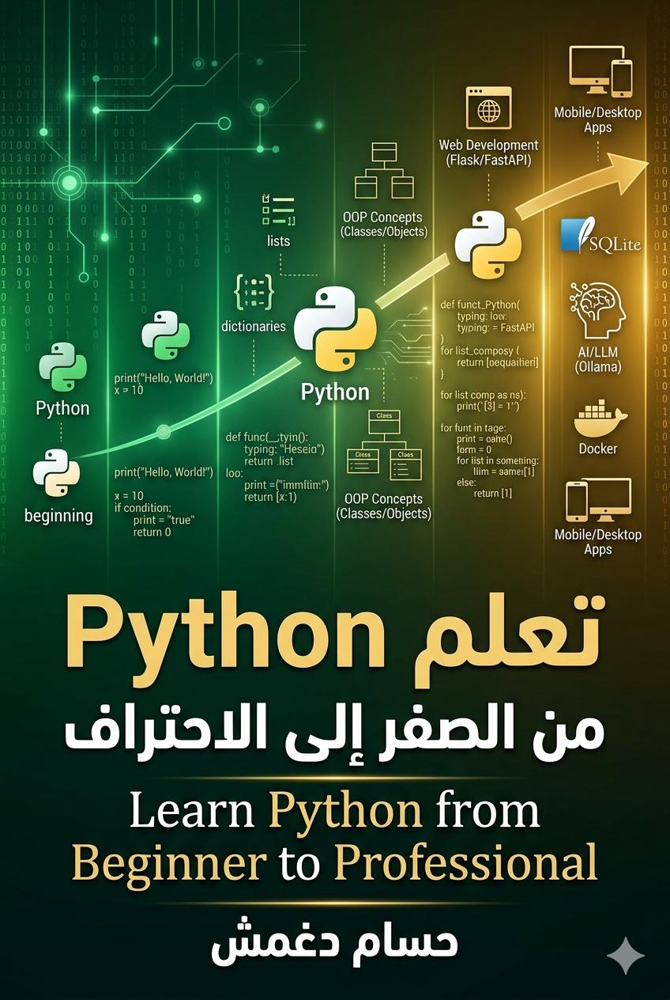

🐍 تعلم Python من الصفر إلى الاحتراف - تأليف: حسام دغمش
تعلم Python
من الصفر إلى الاحتراف
✨ توصية خاصة: OWL Python Editor
محرر Python المثالي للطلاب والمبتدئين
⭐ لماذا أوصي بـ OWL Python Editor؟ لأنه المحرر الوحيد الذي يدعم اللغة العربية بشكل كامل دون أي أخطاء أو مشاكل في الترميز. فقط اكتب الكود العربي وسيعمل مباشرة!
✅ المميزات:
- 🚀 خفيف وسريع جداً - يستهلك القليل من الذاكرة
- 🌍 دعم كامل للغة العربية - لا توجد أخطاء في الطباعة
- 📋 نسخ ولصق مباشر - واجهة بسيطة وسهلة
- ⚡ تنفيذ فوري للأكواد - شاهد النتيجة مباشرة
- 🎓 مصمم خصيصاً للطلاب - لا تعقيدات، فقط اكتب ونفذ
📥 كيفية التحميل والاستخدام:
- حمّل المحرر من الرابط: github.com/Hdoughmosch/owl_python_editor
- افتح الملف
owl_python_editor.pyباستخدام Python - اكتب كودك العربي أو الإنجليزي
- اضغط زر "تشغيل" (Run) لرؤية النتيجة
# كود عربي يعمل مباشرة في OWL Editor
name = "أحمد"
age = 20
print(f"مرحباً {name}!")
print(f"عمرك هو {age} سنة")
# يمكنك كتابة أي كود عربي بدون أخطاء
print("Python هي لغة رائعة! 🐍")مرحباً أحمد!
عمرك هو 20 سنة
Python هي لغة رائعة! 🐍📌 رابط التحميل: https://github.com/Hdoughmosch/owl_python_editor
💡 نصيحة: استخدم OWL Editor طوال فترة تعلمك لضمان تجربة سلسة وخالية من الأخطاء.
الفصل الاول: مقدمة في Python
1.1 ما هي Python?
Python هي لغة برمجة عالية المستوى، سهلة القراءة، متعددة الاستخدامات. تم انشاؤها بواسطة Guido van Rossum عام 1991.
1.2 تثبيت Python
تحميل Python من الموقع الرسمي: python.org
التحقق من التثبيت:
# التحقق من اصدار Python
import sys
print(sys.version)
1.3 اول برنامج Python
# اول برنامج: طباعة رسالة ترحيب
print("مرحباً بك في عالم Python!")
# طباعة معلومات متعددة
name = "أحمد"
age = 25
print("الاسم:", name)
print("العمر:", age)
مرحباً بك في عالم Python!
الاسم: أحمد
العمر: 25
الفصل الثاني: المتغيرات وانواع البيانات
2.1 المتغيرات
المتغيرات هي اماكن لتخزين البيانات في الذاكرة.
# تعريف المتغيرات
student_name = "محمد" # سلسلة نصية (String)
student_age = 20 # عدد صحيح (Integer)
student_grade = 85.5 # عدد عشري (Float)
is_passed = True # قيمة منطقية (Boolean)
# قواعد تسمية المتغيرات:
# - يبدأ بحرف او شرطة سفلية
# - لا يبدأ برقم
# - حساس لحالة الاحرف
2.2 انواع البيانات الاساسية
# String - النصوص
course = "برمجة Python"
print(type(course)) # <class 'str'>
# Integer - الاعداد الصحيحة
students_count = 30
print(type(students_count)) # <class 'int'>
# Float - الاعداد العشرية
price = 19.99
print(type(price)) # <class 'float'>
# Boolean - القيم المنطقية
is_active = False
print(type(is_active)) # <class 'bool'>
# None - القيمة الفارغة
result = None
print(type(result)) # <class 'NoneType'>
2.3 التحويل بين الانواع
# تحويل النص الى رقم
num_str = "100"
num_int = int(num_str)
print(num_int + 50) # 150
# تحويل الرقم الى نص
age = 25
age_str = str(age)
print("عمري " + age_str) # عمري 25
# تحويل الى عدد عشري
x = float("3.14")
print(x) # 3.14
الفصل الثالث: العمليات الحسابية والمنطقية
3.1 العمليات الحسابية
a = 15
b = 4
# الجمع
print(a + b) # 19
# الطرح
print(a - b) # 11
# الضرب
print(a * b) # 60
# القسمة
print(a / b) # 3.75
# القسمة الصحيحة
print(a // b) # 3
# باقي القسمة (Modulo)
print(a % b) # 3
# الاس
print(a ** 2) # 225
# الجذر التربيعي
print(16 ** 0.5) # 4.0
3.2 العمليات المنطقية
x = 10
y = 20
# اكبر من
print(x > y) # False
# اصغر من
print(x < y) # True
# يساوي
print(x == 10) # True
# لا يساوي
print(x != 10) # False
# اكبر من او يساوي
print(x >= 10) # True
# اصغر من او يساوي
print(x <= 5) # False
# العمليات المنطقية
print(True and False) # False
print(True or False) # True
print(not True) # False
الفصل الرابع: السلاسل النصية (Strings)
4.1 انشاء ومعالجة النصوص
# انشاء نص
message = "مرحباً بك في Python"
print(message)
# النصوص متعددة الاسطر
poem = """
البرمجة فن
والPython اداة
لنبدأ الرحلة
"""
print(poem)
# الوصول الى حرف معين
text = "Python"
print(text[0]) # P
print(text[-1]) # n (آخر حرف)
4.2 تقطيع النصوص (Slicing)
word = "Programming"
# من البداية الى الفهرس 4
print(word[:4]) # Prog
# من الفهرس 4 الى النهاية
print(word[4:]) # ramming
# من الفهرس 2 الى 6
print(word[2:6]) # ogra
# كل حرف ثاني
print(word[::2]) # Pormig
# عكس النص
print(word[::-1]) # gnimmargorP
4.3 دوال النصوص
text = " Hello Python World "
# ازالة المسافات
print(text.strip()) # "Hello Python World"
# التحويل لاحرف كبيرة
print(text.upper()) # " HELLO PYTHON WORLD "
# التحويل لاحرف صغيرة
print(text.lower()) # " hello python world "
# الاستبدال
print(text.replace("Python", "Java")) # " Hello Java World "
# التقسيم
words = text.split()
print(words) # ['Hello', 'Python', 'World']
# الدمج
new_text = "-".join(words)
print(new_text) # Hello-Python-World
# البحث
print("Python" in text) # True
print(text.find("Python")) # 8
4.4 تنسيق النصوص
name = "أحمد"
age = 22
grade = 88.5
# الطريقة القديمة %
print("الاسم: %s، العمر: %d، الدرجة: %.1f" % (name, age, grade))
# طريقة format()
print("الاسم: {}، العمر: {}، الدرجة: {:.1f}".format(name, age, grade))
# f-string (الافضل والاحدث)
print(f"الاسم: {name}، العمر: {age}، الدرجة: {grade:.1f}")
# f-string مع تعبيرات
a, b = 5, 3
print(f"{a} + {b} = {a + b}") # 5 + 3 = 8
الفصل الخامس: القوائم (Lists)
5.1 انشاء والوصول للقوائم
# انشاء قائمة
fruits = ["تفاح", "موز", "برتقال", "عنب"]
print(fruits)
# قائمة مختلطة الانواع
mixed = [1, "نص", 3.14, True, [1, 2, 3]]
print(mixed)
# الوصول للعناصر
print(fruits[0]) # تفاح
print(fruits[-1]) # عنب (آخر عنصر)
# تعديل عنصر
fruits[1] = "مانجو"
print(fruits) # ['تفاح', 'مانجو', 'برتقال', 'عنب']
5.2 تقطيع القوائم
numbers = [0, 1, 2, 3, 4, 5, 6, 7, 8, 9]
print(numbers[2:5]) # [2, 3, 4]
print(numbers[:3]) # [0, 1, 2]
print(numbers[7:]) # [7, 8, 9]
print(numbers[::2]) # [0, 2, 4, 6, 8]
print(numbers[::-1]) # [9, 8, 7, 6, 5, 4, 3, 2, 1, 0]
5.3 دوال وطرق القوائم
# اضافة عنصر
nums = [1, 2, 3]
nums.append(4)
print(nums) # [1, 2, 3, 4]
# ادراج في موقع محدد
nums.insert(1, 99)
print(nums) # [1, 99, 2, 3, 4]
# اضافة قائمة اخرى
more = [5, 6]
nums.extend(more)
print(nums) # [1, 99, 2, 3, 4, 5, 6]
# ازالة عنصر
nums.remove(99)
print(nums) # [1, 2, 3, 4, 5, 6]
# ازالة بالفهرس
popped = nums.pop()
print(popped) # 6
print(nums) # [1, 2, 3, 4, 5]
# البحث
print(nums.index(3)) # 2
# الترتيب
nums.sort(reverse=True)
print(nums) # [5, 4, 3, 2, 1]
# عدد التكرارات
print(nums.count(3)) # 1
# نسخ القائمة
nums_copy = nums.copy()
print(nums_copy) # [5, 4, 3, 2, 1]
5.4 فهم القوائم (List Comprehension)
# القائمة التقليدية
squares = []
for x in range(10):
squares.append(x ** 2)
print(squares) # [0, 1, 4, 9, 16, 25, 36, 49, 64, 81]
# باستخدام List Comprehension
squares = [x**2 for x in range(10)]
print(squares)
# مع شرط
even_squares = [x**2 for x in range(10) if x % 2 == 0]
print(even_squares) # [0, 4, 16, 36, 64]
# مع if-else
labels = ["زوجي" if x % 2 == 0 else "فردي" for x in range(5)]
print(labels) # ['زوجي', 'فردي', 'زوجي', 'فردي', 'زوجي']
الفصل السادس: الصفوف (Tuples) والمجموعات (Sets)
6.1 الصفوف (Tuples)
# Tuple غير قابل للتعديل
coordinates = (10, 20)
print(coordinates[0]) # 10
# unpacking
x, y = coordinates
print(x, y) # 10 20
# Tuple مع عنصر واحد (يجب الفاصلة)
single = (5,)
print(type(single)) # <class 'tuple'>
# دوال Tuple
numbers = (1, 2, 3, 2, 4, 2)
print(numbers.count(2)) # 3
print(numbers.index(3)) # 2
# تحويل بين List و Tuple
my_list = [1, 2, 3]
my_tuple = tuple(my_list)
back_to_list = list(my_tuple)
6.2 المجموعات (Sets)
# Set: مجموعة فريدة غير مرتبة
fruits = {"تفاح", "موز", "برتقال"}
print(fruits)
# اضافة عنصر
fruits.add("عنب")
print(fruits)
# ازالة عنصر
fruits.remove("موز")
print(fruits)
# عمليات المجموعات
a = {1, 2, 3, 4}
b = {3, 4, 5, 6}
# الاتحاد
print(a | b) # {1, 2, 3, 4, 5, 6}
print(a.union(b))
# التقاطع
print(a & b) # {3, 4}
print(a.intersection(b))
# الفرق
print(a - b) # {1, 2}
print(a.difference(b))
# الفرق المتناظر
print(a ^ b) # {1, 2, 5, 6}
print(a.symmetric_difference(b))
# ازالة التكرارات من قائمة
nums = [1, 2, 2, 3, 3, 3]
unique = list(set(nums))
print(unique) # [1, 2, 3]
الفصل السابع: القواميس (Dictionaries)
7.1 انشاء والوصول للقواميس
# انشاء قاموس
student = {
"name": "محمد",
"age": 20,
"grade": 85.5,
"courses": ["Python", "Math"]
}
# الوصول للقيم
print(student["name"]) # محمد
print(student.get("age")) # 20
# الوصول بقيمة افتراضية
print(student.get("phone", "غير متوفر")) # غير متوفر
# تعديل قيمة
student["age"] = 21
print(student["age"]) # 21
# اضافة مفتاح جديد
student["phone"] = "0123456789"
print(student)
7.2 طرق القواميس
student = {"name": "علي", "age": 22, "grade": 90}
# المفاتيح
print(student.keys()) # dict_keys(['name', 'age', 'grade'])
# القيم
print(student.values()) # dict_values(['علي', 22, 90])
# الازواج
print(student.items()) # dict_items([('name', 'علي'), ...])
# التكرار على القاموس
for key, value in student.items():
print(f"{key}: {value}")
# دمج قواميس
extra = {"city": "القاهرة", "phone": "0123"}
student.update(extra)
print(student)
# ازالة مفتاح
removed = student.pop("phone")
print(removed) # 0123
# افراغ القاموس
student.clear()
print(student) # {}
7.3 فهم القواميس (Dictionary Comprehension)
# انشاء قاموس من قائمة
names = ["أحمد", "محمد", "علي"]
name_lengths = {name: len(name) for name in names}
print(name_lengths) # {'أحمد': 4, 'محمد': 4, 'علي': 3}
# مع شرط
squares = {x: x**2 for x in range(10) if x % 2 == 0}
print(squares) # {0: 0, 2: 4, 4: 16, 6: 36, 8: 64}
الفصل الثامن: جمل التحكم
8.1 جملة if
age = 18
if age < 13:
print("طفل")
elif age < 20:
print("مراهق") # ✓ سيطبع هذا
elif age < 60:
print("بالغ")
else:
print("كبير السن")
# if مختصرة
status = "بالغ" if age >= 18 else "قاصر"
print(status) # بالغ
# if متداخلة
score = 85
if score >= 60:
if score >= 90:
print("ممتاز")
elif score >= 80:
print("جيد جداً") # ✓
else:
print("جيد")
else:
print("راسب")
8.2 جملة for
# التكرار على قائمة
fruits = ["تفاح", "موز", "برتقال"]
for fruit in fruits:
print(fruit)
# التكرار مع range()
for i in range(5):
print(i) # 0, 1, 2, 3, 4
# range(start, stop, step)
for i in range(10, 0, -2):
print(i) # 10, 8, 6, 4, 2
# التكرار على نص
for char in "Python":
print(char)
# التكرار على قاموس
student = {"name": "أحمد", "age": 20}
for key, value in student.items():
print(f"{key} = {value}")
# enumerate() للحصول على الفهرس
for index, fruit in enumerate(fruits):
print(f"{index}: {fruit}")
# zip() للتكرار على قوائم متعددة
names = ["أحمد", "محمد"]
scores = [85, 90]
for name, score in zip(names, scores):
print(f"{name}: {score}")
8.3 جملة while
# while اساسية
count = 0
while count < 5:
print(count)
count += 1
# while مع break
while True:
user_input = input("أدخل 'خروج' للانهاء: ")
if user_input == "خروج":
break
# while مع continue
num = 0
while num < 10:
num += 1
if num % 2 == 0:
continue
print(num) # يطبع الاعداد الفردية فقط
# else مع while
i = 0
while i < 3:
print(i)
i += 1
else:
print("انتهى التكرار بنجاح")
الفصل التاسع: الدوال (Functions)
9.1 تعريف واستدعاء الدوال
# دالة بسيطة
def greet():
print("مرحباً!")
greet()
# دالة مع معاملات
def greet_person(name):
print(f"مرحباً {name}!")
greet_person("أحمد")
# دالة مع return
def add(a, b):
return a + b
result = add(5, 3)
print(result) # 8
# دالة متعددة المعاملات
def calculate(x, y, operation="+"):
if operation == "+":
return x + y
elif operation == "-":
return x - y
elif operation == "*":
return x * y
elif operation == "/":
return x / y if y != 0 else "خطأ: القسمة على صفر"
print(calculate(10, 5)) # 15 (افتراضي +)
print(calculate(10, 5, "-")) # 5
print(calculate(10, 0, "/")) # خطأ: القسمة على صفر
9.2 انواع المعاملات
# معاملات افتراضية
def power(base, exponent=2):
return base ** exponent
print(power(3)) # 9 (3²)
print(power(2, 3)) # 8 (2³)
# معاملات متغيرة الطول (*args)
def sum_all(*numbers):
return sum(numbers)
print(sum_all(1, 2, 3, 4, 5)) # 15
# معاملات الكلمات المفتاحية (**kwargs)
def print_info(**kwargs):
for key, value in kwargs.items():
print(f"{key}: {value}")
print_info(name="أحمد", age=25, city="القاهرة")
# الجمع بين الانواع
def complex_function(a, b, *args, default="value", **kwargs):
print(f"a={a}, b={b}")
print(f"args={args}")
print(f"default={default}")
print(f"kwargs={kwargs}")
complex_function(1, 2, 3, 4, 5, default="custom", x=10, y=20)
9.3 دوال Lambda
# lambda بسيطة
square = lambda x: x ** 2
print(square(5)) # 25
# lambda متعددة المعاملات
multiply = lambda x, y: x * y
print(multiply(4, 5)) # 20
# استخدام lambda مع sorted()
students = [
{"name": "أحمد", "grade": 85},
{"name": "محمد", "grade": 92},
{"name": "علي", "grade": 78}
]
sorted_students = sorted(students, key=lambda s: s["grade"], reverse=True)
print(sorted_students)
# استخدام lambda مع map()
numbers = [1, 2, 3, 4, 5]
squares = list(map(lambda x: x**2, numbers))
print(squares) # [1, 4, 9, 16, 25]
# استخدام lambda مع filter()
evens = list(filter(lambda x: x % 2 == 0, numbers))
print(evens) # [2, 4]
9.4 دوال متقدمة
# دالة متداخلة (Nested)
def outer_function(x):
def inner_function(y):
return x + y
return inner_function
add_five = outer_function(5)
print(add_five(10)) # 15
# Closure
def make_multiplier(n):
def multiplier(x):
return x * n
return multiplier
double = make_multiplier(2)
triple = make_multiplier(3)
print(double(5)) # 10
print(triple(5)) # 15
# Decorator
def my_decorator(func):
def wrapper(*args, **kwargs):
print("قبل تنفيذ الدالة")
result = func(*args, **kwargs)
print("بعد تنفيذ الدالة")
return result
return wrapper
@my_decorator
def say_hello():
print("مرحباً!")
say_hello()
الفصل العاشر: البرمجة كائنية التوجه (OOP)
10.1 Classes و Objects
# تعريف Class
class Student:
# Constructor
def __init__(self, name, age, grade):
self.name = name
self.age = age
self.grade = grade
# Method
def introduce(self):
return f"أنا {self.name}، عمري {self.age}، درجتي {self.grade}"
def is_passed(self):
return self.grade >= 60
# انشاء Object
student1 = Student("أحمد", 20, 85)
student2 = Student("محمد", 22, 55)
print(student1.introduce()) # أنا أحمد، عمري 20، درجتي 85
print(student1.is_passed()) # True
print(student2.is_passed()) # False
10.2 الوراثة (Inheritance)
# Class اساسي
class Person:
def __init__(self, name, age):
self.name = name
self.age = age
def greet(self):
return f"مرحباً، أنا {self.name}"
# Class مشتق
class Teacher(Person):
def __init__(self, name, age, subject, salary):
super().__init__(name, age)
self.subject = subject
self.salary = salary
def teach(self):
return f"أنا أدرّس {self.subject}"
# Override
def greet(self):
base = super().greet()
return f"{base} وأنا أستاذ"
teacher = Teacher("د. علي", 40, "Python", 5000)
print(teacher.greet()) # مرحباً، أنا د. علي وأنا أستاذ
print(teacher.teach()) # أنا أدرّس Python
10.3 Encapsulation و Polymorphism
class BankAccount:
def __init__(self, owner, balance=0):
self.owner = owner
self.__balance = balance # private
# Getter
@property
def balance(self):
return self.__balance
# Setter
@balance.setter
def balance(self, value):
if value >= 0:
self.__balance = value
else:
raise ValueError("الرصيد لا يمكن أن يكون سالباً")
def deposit(self, amount):
if amount > 0:
self.__balance += amount
return True
return False
def withdraw(self, amount):
if 0 < amount <= self.__balance:
self.__balance -= amount
return True
return False
account = BankAccount("أحمد", 1000)
print(account.balance) # 1000 (عبر Getter)
account.balance = 2000 # عبر Setter
print(account.balance) # 2000
# Polymorphism
class Animal:
def speak(self):
raise NotImplementedError
class Dog(Animal):
def speak(self):
return "نباح!"
class Cat(Animal):
def speak(self):
return "مواء!"
def animal_sound(animal):
print(animal.speak())
dog = Dog()
cat = Cat()
animal_sound(dog) # نباح!
animal_sound(cat) # مواء!
10.4 Class Methods و Static Methods
class DateUtil:
def __init__(self, year, month, day):
self.year = year
self.month = month
self.day = day
# Instance method
def format(self):
return f"{self.year}-{self.month:02d}-{self.day:02d}"
# Class method
@classmethod
def from_string(cls, date_string):
year, month, day = map(int, date_string.split('-'))
return cls(year, month, day)
# Static method
@staticmethod
def is_valid_date(year, month, day):
if not (1 <= month <= 12):
return False
if not (1 <= day <= 31):
return False
return True
# استخدام
date1 = DateUtil(2024, 5, 15)
print(date1.format()) # 2024-05-15
date2 = DateUtil.from_string("2024-12-25")
print(date2.format()) # 2024-12-25
print(DateUtil.is_valid_date(2024, 13, 5)) # False
الفصل الحادي عشر: التعامل مع الملفات
11.1 القراءة والكتابة
# كتابة في ملف
with open("students.txt", "w", encoding="utf-8") as file:
file.write("أحمد: 85\n")
file.write("محمد: 92\n")
file.write("علي: 78\n")
# قراءة الملف كاملاً
with open("students.txt", "r", encoding="utf-8") as file:
content = file.read()
print(content)
# قراءة سطر بسطر
with open("students.txt", "r", encoding="utf-8") as file:
for line in file:
print(line.strip())
# قراءة في قائمة
with open("students.txt", "r", encoding="utf-8") as file:
lines = file.readlines()
print(lines)
11.2 التعامل مع CSV
import csv
# كتابة CSV
with open("data.csv", "w", newline="", encoding="utf-8") as file:
writer = csv.writer(file)
writer.writerow(["الاسم", "العمر", "الدرجة"])
writer.writerow(["أحمد", 20, 85])
writer.writerow(["محمد", 22, 92])
# قراءة CSV
with open("data.csv", "r", encoding="utf-8") as file:
reader = csv.reader(file)
for row in reader:
print(row)
# قراءة CSV كقاموس
with open("data.csv", "r", encoding="utf-8") as file:
reader = csv.DictReader(file)
for row in reader:
print(f"{row['الاسم']}: {row['الدرجة']}")
11.3 التعامل مع JSON
import json
# بيانات Python
student = {
"name": "أحمد",
"age": 20,
"courses": ["Python", "Math"],
"active": True
}
# تحويل الى JSON
json_string = json.dumps(student, ensure_ascii=False, indent=2)
print(json_string)
# حفظ في ملف
with open("student.json", "w", encoding="utf-8") as file:
json.dump(student, file, ensure_ascii=False, indent=2)
# قراءة JSON
with open("student.json", "r", encoding="utf-8") as file:
loaded_student = json.load(file)
print(loaded_student["name"])
# تحويل JSON الى Python
data = json.loads('{"x": 10, "y": 20}')
print(data["x"]) # 10
الفصل الثاني عشر: معالجة الأخطاء
12.1 try-except
# معالجة خطأ بسيط
try:
number = int(input("أدخل رقماً: "))
print(f"ضعف الرقم: {number * 2}")
except ValueError:
print("خطأ: يجب إدخال رقم صحيح!")
# معالجة انواع متعددة
try:
x = int(input("المقسوم: "))
y = int(input("المقسوم عليه: "))
result = x / y
print(f"الناتج: {result}")
except ValueError:
print("يجب إدخال أرقام!")
except ZeroDivisionError:
print("لا يمكن القسمة على صفر!")
except Exception as e:
print(f"خطأ غير متوقع: {e}")
12.2 try-except-else-finally
def divide_numbers(a, b):
try:
result = a / b
except ZeroDivisionError:
print("خطأ: القسمة على صفر!")
return None
except TypeError:
print("خطأ: يجب إدخال أرقام!")
return None
else:
print("تمت العملية بنجاح!")
return result
finally:
print("انتهى تنفيذ الدالة")
print(divide_numbers(10, 2)) # 5.0
print(divide_numbers(10, 0)) # None
12.3 رفع الاستثناءات
def validate_age(age):
if not isinstance(age, int):
raise TypeError("العمر يجب أن يكون رقماً صحيحاً")
if age < 0:
raise ValueError("العمر لا يمكن أن يكون سالباً")
if age > 150:
raise ValueError("العمر غير واقعي")
return True
try:
validate_age(-5)
except ValueError as e:
print(f"خطأ: {e}")
# Custom Exception
class InsufficientFundsError(Exception):
def __init__(self, balance, amount):
self.balance = balance
self.amount = amount
super().__init__(f"رصيد غير كافٍ: الرصيد {balance}، المطلوب {amount}")
def withdraw(balance, amount):
if amount > balance:
raise InsufficientFundsError(balance, amount)
return balance - amount
try:
withdraw(100, 200)
except InsufficientFundsError as e:
print(e)
الفصل الثالث عشر: الوحدات والحزم (Modules & Packages)
13.1 استيراد الوحدات
# استيراد الوحدة كاملة
import math
print(math.sqrt(16)) # 4.0
print(math.pi) # 3.141592653589793
# استيراد دالة محددة
from math import sqrt, pow
print(sqrt(25)) # 5.0
print(pow(2, 3)) # 8.0
# استيراد باسم مستعار
import random as rnd
print(rnd.randint(1, 10))
from datetime import datetime as dt
now = dt.now()
print(now)
13.2 انشاء وحدة خاصة
# ملف: calculator.py
"""وحدة الآلة الحاسبة"""
def add(a, b):
"""جمع رقمين"""
return a + b
def subtract(a, b):
"""طرح رقمين"""
return a - b
def multiply(a, b):
"""ضرب رقمين"""
return a * b
def divide(a, b):
"""قسمة رقمين"""
if b == 0:
raise ValueError("لا يمكن القسمة على صفر")
return a / b
# استخدام الوحدة
# import calculator
# print(calculator.add(5, 3))
13.3 وحدة os و sys
import os
import sys
# معلومات النظام
print(os.name) # posix / nt
print(sys.platform) # linux / win32 / darwin
# المسارات
print(os.getcwd()) # المجلد الحالي
print(os.listdir(".")) # محتويات المجلد
# انشاء/حذف مجلد
os.mkdir("test_folder")
os.rmdir("test_folder")
# مسار الملف
print(os.path.exists("file.txt"))
print(os.path.isfile("file.txt"))
print(os.path.isdir("folder"))
# دمج المسارات
path = os.path.join("folder", "subfolder", "file.txt")
print(path)
الفصل الرابع عشر: البرمجة المتقدمة
14.1 Generators
# Generator function
def countdown(n):
while n > 0:
yield n
n -= 1
for num in countdown(5):
print(num) # 5, 4, 3, 2, 1
# Generator expression
squares = (x**2 for x in range(10))
print(next(squares)) # 0
print(next(squares)) # 1
# مثال عملي: قراءة ملف كبير
def read_large_file(file_path):
with open(file_path, 'r') as file:
for line in file:
yield line.strip()
# for line in read_large_file("huge_file.txt"):
# process(line)
14.2 Decorators متقدمة
from functools import wraps
import time
# Decorator مع معاملات
def repeat(times):
def decorator(func):
@wraps(func)
def wrapper(*args, **kwargs):
for _ in range(times):
result = func(*args, **kwargs)
return result
return wrapper
return decorator
@repeat(3)
def greet(name):
print(f"مرحباً {name}!")
greet("أحمد")
# Decorator لقياس الوقت
def timer(func):
@wraps(func)
def wrapper(*args, **kwargs):
start = time.time()
result = func(*args, **kwargs)
elapsed = time.time() - start
print(f"{func.__name__} استغرقت {elapsed:.4f} ثانية")
return result
return wrapper
@timer
def slow_function():
time.sleep(1)
return "تم!"
slow_function()
14.3 Context Managers
# Context Manager باستخدام class
class FileManager:
def __init__(self, filename, mode):
self.filename = filename
self.mode = mode
self.file = None
def __enter__(self):
self.file = open(self.filename, self.mode)
return self.file
def __exit__(self, exc_type, exc_val, exc_tb):
if self.file:
self.file.close()
return False
# استخدام
with FileManager("test.txt", "w") as f:
f.write("مرحباً!")
# Context Manager باستخدام decorator
from contextlib import contextmanager
@contextmanager
def managed_resource(name):
print(f"تهيئة المورد: {name}")
yield name
print(f"تنظيف المورد: {name}")
with managed_resource("database") as res:
print(f"استخدام: {res}")
الفصل الخامس عشر: مكتبات Python القياسية
15.1 datetime
from datetime import datetime, date, timedelta
# التاريخ والوقت الحالي
now = datetime.now()
print(now)
# انشاء تاريخ محدد
birth_date = date(2000, 5, 15)
print(birth_date)
# الفرق بين تاريخين
age = date.today() - birth_date
print(f"العمر بالايام: {age.days}")
# اضافة/طرح فترات
future = now + timedelta(days=30)
print(future)
# التنسيق
formatted = now.strftime("%Y-%m-%d %H:%M:%S")
print(formatted)
# تحليل النص
parsed = datetime.strptime("2024-05-15", "%Y-%m-%d")
print(parsed)
15.2 collections
from collections import Counter, defaultdict, namedtuple
# Counter
words = ["تفاح", "موز", "تفاح", "برتقال", "تفاح", "موز"]
word_count = Counter(words)
print(word_count) # Counter({'تفاح': 3, 'موز': 2, 'برتقال': 1})
print(word_count.most_common(2))
# defaultdict
grouped = defaultdict(list)
for word in words:
grouped[len(word)].append(word)
print(dict(grouped))
# namedtuple
Point = namedtuple("Point", ["x", "y"])
p = Point(10, 20)
print(p.x, p.y) # 10 20
15.3 itertools
import itertools
# توليد جميع التوائم
colors = ["أحمر", "أخضر", "أزرق"]
sizes = ["S", "M", "L"]
for combo in itertools.product(colors, sizes):
print(combo)
# التباديل
for perm in itertools.permutations([1, 2, 3], 2):
print(perm)
# التوافيق
for comb in itertools.combinations([1, 2, 3, 4], 2):
print(comb)
# تجميع
data = [("أ", 1), ("ب", 2), ("أ", 3)]
for key, group in itertools.groupby(data, lambda x: x[0]):
print(key, list(group))
الفصل السادس عشر: البرمجة الشبكية (Networking)
16.1 requests (HTTP)
# يتطلب: pip install requests
import requests
# GET request
response = requests.get("https://api.github.com")
print(response.status_code)
print(response.json())
# GET مع معاملات
params = {"q": "python", "page": 1}
response = requests.get("https://api.github.com/search/repositories", params=params)
data = response.json()
print(data["total_count"])
# POST request
payload = {"name": "test", "description": "وصف"}
response = requests.post("https://httpbin.org/post", json=payload)
print(response.json())
# مع Headers
headers = {"Authorization": "Bearer token123"}
response = requests.get("https://api.example.com/data", headers=headers)
16.2 socket
import socket
# Client بسيط
def simple_client():
client = socket.socket(socket.AF_INET, socket.SOCK_STREAM)
client.connect(("example.com", 80))
request = "GET / HTTP/1.1\r\nHost: example.com\r\n\r\n"
client.send(request.encode())
response = client.recv(4096)
print(response.decode())
client.close()
# Server بسيط
def simple_server():
server = socket.socket(socket.AF_INET, socket.SOCK_STREAM)
server.bind(("localhost", 8080))
server.listen(5)
print("الخادم يعمل على المنفذ 8080...")
while True:
client, address = server.accept()
print(f"اتصال من: {address}")
client.send(b"مرحباً من الخادم!")
client.close()
الفصل السابع عشر: قواعد البيانات (SQLite)
17.1 SQLite الاساسي
import sqlite3
# الاتصال بقاعدة البيانات
conn = sqlite3.connect("school.db")
cursor = conn.cursor()
# انشاء جدول
cursor.execute("""
CREATE TABLE IF NOT EXISTS students (
id INTEGER PRIMARY KEY AUTOINCREMENT,
name TEXT NOT NULL,
age INTEGER,
grade REAL
)
""")
# ادراج بيانات
cursor.execute("INSERT INTO students (name, age, grade) VALUES (?, ?, ?)",
("أحمد", 20, 85.5))
cursor.execute("INSERT INTO students (name, age, grade) VALUES (?, ?, ?)",
("محمد", 22, 92.0))
# حفظ التغييرات
conn.commit()
# الاستعلام
cursor.execute("SELECT * FROM students")
students = cursor.fetchall()
for student in students:
print(student)
# الاستعلام بشرط
cursor.execute("SELECT * FROM students WHERE grade > ?", (90,))
top_students = cursor.fetchall()
print(top_students)
# التحديث
cursor.execute("UPDATE students SET grade = ? WHERE name = ?", (95, "أحمد"))
# الحذف
cursor.execute("DELETE FROM students WHERE age < ?", (21,))
conn.commit()
conn.close()
17.2 SQLite مع Context Manager
import sqlite3
class Database:
def __init__(self, db_name):
self.db_name = db_name
def __enter__(self):
self.conn = sqlite3.connect(self.db_name)
self.conn.row_factory = sqlite3.Row
return self.conn.cursor()
def __exit__(self, exc_type, exc_val, exc_tb):
if exc_type is None:
self.conn.commit()
else:
self.conn.rollback()
self.conn.close()
return False
# استخدام
with Database("school.db") as cursor:
cursor.execute("SELECT * FROM students")
for row in cursor.fetchall():
print(f"{row['name']}: {row['grade']}")
الفصل الثامن عشر: تطوير الويب
18.1 Flask - تطبيق بسيط
# يتطلب: pip install flask
from flask import Flask, jsonify, request
app = Flask(__name__)
# Route اساسي
@app.route("/")
def home():
return "مرحباً بك في API!"
# Route مع متغير
@app.route("/hello/<name>")
def hello(name):
return f"مرحباً {name}!"
# API JSON
@app.route("/api/students", methods=["GET"])
def get_students():
students = [
{"id": 1, "name": "أحمد", "grade": 85},
{"id": 2, "name": "محمد", "grade": 92}
]
return jsonify(students)
# POST request
@app.route("/api/students", methods=["POST"])
def add_student():
data = request.get_json()
# معالجة البيانات...
return jsonify({"message": "تم الإضافة", "data": data}), 201
if __name__ == "__main__":
app.run(debug=True)
18.2 FastAPI - تطبيق حديث
# يتطلب: pip install fastapi uvicorn
from fastapi import FastAPI
from pydantic import BaseModel
from typing import List
app = FastAPI(title="API الطلاب")
# نموذج البيانات
class Student(BaseModel):
id: int
name: str
age: int
grade: float
# قاعدة بيانات وهمية
students_db = [
Student(id=1, name="أحمد", age=20, grade=85.5),
Student(id=2, name="محمد", age=22, grade=92.0)
]
@app.get("/students", response_model=List[Student])
def get_students():
return students_db
@app.get("/students/{student_id}")
def get_student(student_id: int):
for student in students_db:
if student.id == student_id:
return student
return {"error": "الطالب غير موجود"}
@app.post("/students", response_model=Student)
def create_student(student: Student):
students_db.append(student)
return student
# التشغيل: uvicorn filename:app --reload
الفصل التاسع عشر: علم البيانات الاساسي
19.1 NumPy
# يتطلب: pip install numpy
import numpy as np
# انشاء مصفوفات
arr1 = np.array([1, 2, 3, 4, 5])
arr2 = np.array([[1, 2, 3], [4, 5, 6]])
# خصائص
print(arr2.shape) # (2, 3)
print(arr2.dtype) # int64
print(arr2.ndim) # 2
# العمليات
print(arr1 + 10) # [11 12 13 14 15]
print(arr1 * 2) # [ 2 4 6 8 10]
print(np.sum(arr1)) # 15
print(np.mean(arr1)) # 3.0
# المصفوفات الخاصة
zeros = np.zeros((3, 3))
ones = np.ones((2, 4))
identity = np.eye(3)
random_arr = np.random.rand(3, 3)
# التقطيع
print(arr2[0, :]) # [1 2 3]
print(arr2[:, 1]) # [2 5]
19.2 Pandas
# يتطلب: pip install pandas
import pandas as pd
# انشاء DataFrame
data = {
"الاسم": ["أحمد", "محمد", "علي", "سارة"],
"العمر": [20, 22, 19, 21],
"الدرجة": [85, 92, 78, 95]
}
df = pd.DataFrame(data)
print(df)
# معلومات اساسية
print(df.head(2))
print(df.describe())
print(df.info())
# الوصول للبيانات
print(df["الاسم"])
print(df.loc[0]) # الصف الاول
print(df.loc[df["الدرجة"] > 90]) # الدرجات > 90
# الترتيب
print(df.sort_values("الدرجة", ascending=False))
# احصائيات
print(df["الدرجة"].mean())
print(df["الدرجة"].max())
print(df.groupby("العمر")["الدرجة"].mean())
# قراءة/كتابة CSV
# df.to_csv("students.csv", index=False)
# df = pd.read_csv("students.csv")
الفصل العشرون: مشاريع تطبيقية
20.1 مدير المهام (To-Do List)
import json
import os
from datetime import datetime
class TodoManager:
def __init__(self, filename="tasks.json"):
self.filename = filename
self.tasks = self.load_tasks()
def load_tasks(self):
if os.path.exists(self.filename):
with open(self.filename, "r", encoding="utf-8") as f:
return json.load(f)
return []
def save_tasks(self):
with open(self.filename, "w", encoding="utf-8") as f:
json.dump(self.tasks, f, ensure_ascii=False, indent=2)
def add_task(self, title, priority="متوسطة"):
task = {
"id": len(self.tasks) + 1,
"title": title,
"priority": priority,
"completed": False,
"created": datetime.now().isoformat()
}
self.tasks.append(task)
self.save_tasks()
return task
def complete_task(self, task_id):
for task in self.tasks:
if task["id"] == task_id:
task["completed"] = True
self.save_tasks()
return True
return False
def delete_task(self, task_id):
self.tasks = [t for t in self.tasks if t["id"] != task_id]
self.save_tasks()
def list_tasks(self, show_completed=None):
tasks = self.tasks
if show_completed is not None:
tasks = [t for t in tasks if t["completed"] == show_completed]
for task in tasks:
status = "✓" if task["completed"] else " "
print(f"[{status}] {task['id']}. {task['title']} ({task['priority']})")
# استخدام
todo = TodoManager()
todo.add_task("تعلم Python", "عالية")
todo.add_task("قراءة كتاب", "منخفضة")
todo.list_tasks()
20.2 آلة حاسبة متقدمة
import math
class AdvancedCalculator:
def __init__(self):
self.history = []
def log(self, operation, result):
self.history.append(f"{operation} = {result}")
def add(self, a, b):
result = a + b
self.log(f"{a} + {b}", result)
return result
def subtract(self, a, b):
result = a - b
self.log(f"{a} - {b}", result)
return result
def multiply(self, a, b):
result = a * b
self.log(f"{a} × {b}", result)
return result
def divide(self, a, b):
if b == 0:
raise ValueError("لا يمكن القسمة على صفر")
result = a / b
self.log(f"{a} ÷ {b}", result)
return result
def power(self, a, b):
result = a ** b
self.log(f"{a} ^ {b}", result)
return result
def factorial(self, n):
if n < 0 or not isinstance(n, int):
raise ValueError("يجب إدخال عدد صحيح موجب")
result = math.factorial(n)
self.log(f"{n}!", result)
return result
def sqrt(self, n):
if n < 0:
raise ValueError("لا يمكن حساب جذر عدد سالب")
result = math.sqrt(n)
self.log(f"√{n}", result)
return result
def show_history(self):
print("\n=== سجل العمليات ===")
for entry in self.history:
print(entry)
# استخدام
calc = AdvancedCalculator()
print(calc.add(10, 5))
print(calc.power(2, 10))
print(calc.factorial(5))
calc.show_history()
20.3 تحميل الملفات مع شريط تقدم
import requests
from tqdm import tqdm # pip install tqdm
def download_file(url, filename=None):
if filename is None:
filename = url.split("/")[-1]
response = requests.get(url, stream=True)
total_size = int(response.headers.get("content-length", 0))
with open(filename, "wb") as file, tqdm(
desc=filename,
total=total_size,
unit="B",
unit_scale=True,
unit_divisor=1024,
) as pbar:
for data in response.iter_content(chunk_size=1024):
size = file.write(data)
pbar.update(size)
print(f"تم التحميل: {filename}")
# استخدام
# download_file("https://example.com/file.zip")
الفصل الحادي والعشرون: أفضل الممارسات
21.1 Style Guide (PEP 8)
# ✅ صحيح
def calculate_area(width, height):
"""حساب مساحة المستطيل."""
return width * height
class BankAccount:
"""يمثل حساباً مصرفياً."""
def __init__(self, balance=0):
self._balance = balance
@property
def balance(self):
"""الرصيد الحالي."""
return self._balance
# ❌ خاطئ
def calc(w,h):
return w*h
class bankaccount:
def __init__(self,b=0):
self.b=b
21.2 Docstrings
def process_data(data, threshold=0.5):
"""
معالجة البيانات وتصفية القيم.
Args:
data (list): قائمة الارقام المراد معالجتها.
threshold (float): الحد الادنى للقبول (افتراضي: 0.5).
Returns:
list: القائمة المصفاة.
Raises:
ValueError: إذا كانت البيانات فارغة.
Example:
>>> process_data([0.3, 0.7, 0.9])
[0.7, 0.9]
"""
if not data:
raise ValueError("البيانات فارغة")
return [x for x in data if x >= threshold]
21.3 Type Hints
from typing import List, Dict, Optional, Union
def greet(name: str, times: int = 1) -> str:
"""إرجاع رسالة ترحيب."""
return (f"مرحباً {name}!\n") * times
def process_students(students: List[Dict[str, Union[str, int]]]) -> Optional[int]:
"""معالجة قائمة الطلاب وإرجاع العدد."""
if not students:
return None
return len(students)
def find_student(students: List[dict], name: str) -> Optional[dict]:
"""البحث عن طالب بالاسم."""
for student in students:
if student.get("name") == name:
return student
return None
الفصل الثاني والعشرون: نصائح وأدوات
22.1 Virtual Environments
# انشاء بيئة افتراضية
python -m venv myenv
# تفعيل (Windows)
myenv\Scripts\activate
# تفعيل (Linux/Mac)
source myenv/bin/activate
# الغاء التفعيل
deactivate
# حفظ المتطلبات
pip freeze > requirements.txt
# تثبيت المتطلبات
pip install -r requirements.txt
22.2 Testing
# يتطلب: pip install pytest
import pytest
def add(a, b):
return a + b
def divide(a, b):
if b == 0:
raise ValueError("لا يمكن القسمة على صفر")
return a / b
# اختبارات
def test_add():
assert add(2, 3) == 5
assert add(-1, 1) == 0
def test_divide():
assert divide(10, 2) == 5
with pytest.raises(ValueError):
divide(10, 0)
# التشغيل: pytest test_file.py -v
22.3 Logging
import logging
# الإعداد
logging.basicConfig(
level=logging.INFO,
format="%(asctime)s - %(name)s - %(levelname)s - %(message)s",
handlers=[
logging.FileHandler("app.log", encoding="utf-8"),
logging.StreamHandler()
]
)
logger = logging.getLogger(__name__)
# الاستخدام
logger.debug("رسالة تصحيح")
logger.info("عملية ناجحة")
logger.warning("تحذير")
logger.error("حدث خطأ")
logger.critical("خطأ فادح!")
╔══════════════════════════════════════════════════════════════════════════════╗ ║ الختام ║ ╚══════════════════════════════════════════════════════════════════════════════╝
ما تعلمناه:
✅ اساسيات Python: المتغيرات، انواع البيانات، العمليات ✅ هياكل البيانات: القوائم، الصفوف، المجموعات، القواميس ✅ جمل التحكم: if, for, while ✅ الدوال: تعريفها، lambda، decorators ✅ OOP: Classes، الوراثة، التغليف، التعددية ✅ الملفات: القراءة، الكتابة، CSV، JSON ✅ معالجة الأخطاء: try-except ✅ الوحدات: استيراد، انشاء ✅ المتقدم: Generators، Context Managers ✅ المكتبات: datetime، collections، itertools ✅ الشبكات: requests، socket ✅ قواعد البيانات: SQLite ✅ الويب: Flask، FastAPI ✅ علم البيانات: NumPy، Pandas ✅ المشاريع: To-Do، Calculator، Downloader ✅ افضل الممارسات: PEP 8، Type Hints، Testing
الخطوة التالية:
- تطبق ما تعلمته في مشاريع حقيقية
- تتعمق في مجال يهمك (ويب، ذكاء اصطناعي، أتمتة...)
- تقرأ كود الاخرين على GitHub
- تشارك في مشاريع مفتوحة المصدر
"أفضل طريقة لتعلم البرمجة هي البرمجة نفسها."
بالتوفيق! 🐍✨
نهاية الكتاب
✨ توصية خاصة: محرر OWL Python Editor
لأداء أفضل تجربة برمجية وأنت تتعلم، أوصي باستخدام OWL Python Editor الذي قمت بتطويره. هذا المحرر مصمم ليكون خفيفاً وسريعاً بشكل استثنائي، مما يجعله الأداة المثالية للطلاب والمبتدئين لتنفيذ واختبار أكواد Python دون أي تعقيد أو استهلاك للموارد.
✅ المميزات: خفيف جداً، سريع في التنفيذ، واجهة بسيطة ومباشرة، مناسب للطلاب في جميع المراحل.
📌 للتحميل والتجربة: github.com/Hdoughmosch/owl_python_editor
الفصل الثالث والعشرون: Async/Concurrency في Python
23.1 لماذا Async/Concurrency؟
في عالم البرمجة الحديث، تتطلب التطبيقات معالجة آلاف الطلبات في نفس الوقت دون إبطاء النظام. Async/Concurrency هي المفتاح لبناء تطبيقات سريعة وقابلة للتوسع (Scalable).
المفاهيم الرئيسية:
- Concurrency: إدارة مهام متعددة (تتقدم معاً)
- Parallelism: تنفيذ مهام متعددة في نفس الوقت (متعدد النواة)
- Async: نمط برمجة غير متزامن (Non-blocking)
23.2 المفاهيم الأساسية
# المقارنة بين Sync و Async
import time
# === الطريقة المتزامنة (Blocking) ===
def fetch_data_sync(url):
time.sleep(2) # محاكاة طلب شبكة
return f"بيانات من {url}"
def main_sync():
urls = ['site1.com', 'site2.com', 'site3.com']
results = []
for url in urls:
results.append(fetch_data_sync(url))
return results
# الوقت: 3 × 2 = 6 ثواني
# === الطريقة غير المتزامنة (Non-blocking) ===
import asyncio
async def fetch_data_async(url):
await asyncio.sleep(2) # محاكاة طلب شبكة
return f"بيانات من {url}"
async def main_async():
urls = ['site1.com', 'site2.com', 'site3.com']
tasks = [fetch_data_async(url) for url in urls]
results = await asyncio.gather(*tasks)
return results
# الوقت: ~2 ثانية فقط (تنفيذ متوازي)
23.3 asyncio - المكتبة الأساسية
import asyncio
# async/await الأساسي
async def say_hello():
print("مرحباً...")
await asyncio.sleep(1)
print("...وداعاً!")
# تشغيل الدالة
asyncio.run(say_hello())
# إنشاء Task
async def main():
task1 = asyncio.create_task(say_hello())
task2 = asyncio.create_task(say_hello())
await task1
await task2
asyncio.run(main())
# asyncio.gather - تنفيذ متعدد
async def fetch_all():
urls = ['api1.com', 'api2.com', 'api3.com']
tasks = [fetch_url(url) for url in urls]
results = await asyncio.gather(*tasks, return_exceptions=True)
return results
# asyncio.wait - انتظار أول مهمة تكتمل
async def race():
task1 = asyncio.create_task(slow_operation())
task2 = asyncio.create_task(fast_operation())
done, pending = await asyncio.wait(
[task1, task2],
return_when=asyncio.FIRST_COMPLETED
)
for task in pending:
task.cancel()
# asyncio.as_completed - معالجة النتائج فوراً
async def process_as_ready():
tasks = [fetch_url(url) for url in urls]
for completed in asyncio.as_completed(tasks):
result = await completed
print(f"تم: {result}")
23.4 aiohttp - طلبات HTTP غير متزامنة
# pip install aiohttp
import aiohttp
import asyncio
async def fetch_url(session, url):
async with session.get(url) as response:
return await response.text()
async def fetch_multiple(urls):
async with aiohttp.ClientSession() as session:
tasks = [fetch_url(session, url) for url in urls]
results = await asyncio.gather(*tasks)
return results
# مثال عملي
async def main():
urls = [
'https://api.github.com',
'https://httpbin.org/get',
'https://jsonplaceholder.typicode.com/posts/1'
]
results = await fetch_multiple(urls)
for url, result in zip(urls, results):
print(f"{url}: {len(result)} بايت")
asyncio.run(main())
23.5 aiomysql / aiopg - قواعد البيانات غير المتزامنة
# pip install aiomysql
import aiomysql
async def get_users():
conn = await aiomysql.connect(
host='localhost', user='root',
password='pass', db='mydb'
)
async with conn.cursor() as cur:
await cur.execute("SELECT * FROM users")
result = await cur.fetchall()
return result
# aiopg for PostgreSQL
# pip install aiopg
import aiopg
async def get_data():
async with aiopg.create_pool('dbname=test user=postgres') as pool:
async with pool.acquire() as conn:
async with conn.cursor() as cur:
await cur.execute("SELECT * FROM data")
return await cur.fetchall()
23.6 Threading - التعددية بالخيوط
import threading
import time
# خيط بسيط
def worker(name):
print(f"خيط {name} يبدأ")
time.sleep(2)
print(f"خيط {name} ينتهي")
thread = threading.Thread(target=worker, args=("A",))
thread.start()
thread.join() # انتظار الانتهاء
# ThreadPoolExecutor
from concurrent.futures import ThreadPoolExecutor
def fetch_url(url):
import requests
return requests.get(url).text
urls = ['https://api.github.com'] * 10
with ThreadPoolExecutor(max_workers=5) as executor:
results = list(executor.map(fetch_url, urls))
# Lock - للوصول الآمن للبيانات المشتركة
counter = 0
lock = threading.Lock()
def increment():
global counter
with lock:
temp = counter
time.sleep(0.001)
counter = temp + 1
23.7 Multiprocessing - التعددية بالعمليات
from multiprocessing import Pool, Process
import os
# Process بسيط
def worker(num):
print(f"العملية {os.getpid()} تعالج {num}")
return num * num
# Pool - مجموعة عمليات
with Pool(processes=4) as pool:
results = pool.map(worker, range(10))
print(results) # [0, 1, 4, 9, 16, 25, 36, 49, 64, 81]
# Process منفصل
p = Process(target=worker, args=(5,))
p.start()
p.join()
# Queue - للتواصل بين العمليات
from multiprocessing import Queue
def producer(queue):
for i in range(5):
queue.put(i)
def consumer(queue):
while True:
item = queue.get()
if item is None:
break
print(f"استلم: {item}")
q = Queue()
p1 = Process(target=producer, args=(q,))
p2 = Process(target=consumer, args=(q,))
p1.start()
p2.start()
p1.join()
q.put(None)
p2.join()
23.8 مقارنة Async vs Threading vs Multiprocessing
┌────────────────────┬─────────────────┬─────────────────┬─────────────────┐
│ الميزة │ Async │ Threading │ Multiprocessing│
├────────────────────┼─────────────────┼─────────────────┼─────────────────┤
│ الاستخدام الأمثل │ I/O Bound │ I/O Bound │ CPU Bound │
│ مثال │ طلبات HTTP │ قراءة ملفات │ حسابات معقدة │
│ عدد المتزامنين │ آلاف │ عشرات │ بعدد النوى │
│ استهلاك الذاكرة │ منخفض جداً │ متوسط │ عالٍ │
│ التعقيد │ متوسط │ منخفض │ متوسط │
│ مشاكل GIL │ لا │ نعم (محدود) │ لا │
│ مشاركة البيانات │ سهلة │ سهلة (مع Lock) │ صعبة (Queue) │
└────────────────────┴─────────────────┴─────────────────┴─────────────────┘
متى تستخدم كل منها:
• Async: خادم ويب، API، WebSocket، آلاف الاتصالات
• Threading: I/O متزامن، مكتبات لا تدعم Async
• Multiprocessing: حسابات ثقيلة، معالجة بيانات، ML
23.9 FastAPI مع Async
from fastapi import FastAPI
import asyncio
app = FastAPI()
@app.get("/")
async def root():
await asyncio.sleep(0.1) # محاكاة عملية
return {"message": "مرحباً"}
@app.get("/items/{item_id}")
async def read_item(item_id: int):
# عملية I/O غير متزامنة
data = await fetch_from_database(item_id)
return {"item": data}
# تشغيل: uvicorn main:app --reload
23.10 WebSocket غير متزامن
from fastapi import FastAPI, WebSocket
app = FastAPI()
@app.websocket("/ws")
async def websocket_endpoint(websocket: WebSocket):
await websocket.accept()
while True:
data = await websocket.receive_text()
await websocket.send_text(f"رد: {data}")
23.11 نصائح وأفضل الممارسات
1. لا تخلط Async و Sync في نفس الدالة
❌ async def bad():
requests.get(url) # Blocking!
✅ async def good():
await aiohttp.get(url) # Non-blocking
2. استخدم asyncio.run() مرة واحدة فقط
❌ for url in urls:
asyncio.run(fetch(url))
✅ asyncio.run(fetch_all(urls))
3. التعامل مع الأخطاء
async def safe_fetch(url):
try:
return await fetch(url)
except aiohttp.ClientError as e:
logger.error(f"فشل: {e}")
return None
4. Rate Limiting
import asyncio
semaphore = asyncio.Semaphore(10) # 10 طلبات كحد أقصى
async def limited_fetch(url):
async with semaphore:
return await fetch(url)
5. Timeout
async def fetch_with_timeout(url):
try:
return await asyncio.wait_for(
fetch(url), timeout=5.0
)
except asyncio.TimeoutError:
return None
الفصل الرابع والعشرون: اختبار متقدم (Advanced Testing)
24.1 لماذا الاختبار المتقدم؟
الاختبار هو ما يفرّق المبرمج المحترف عن المبتدئ. تطبيقات الإنتاج تتطلب:
- اختبارات آلية شاملة
- تغطية عالية (High Coverage)
- اختبارات الأداء والحمل
- اختبارات الأمان
- CI/CD متكامل
24.2 pytest - الإعداد والأساسيات
# pip install pytest pytest-cov pytest-asyncio
# هيكل المشروع
myproject/
├── src/
│ └── calculator.py
├── tests/
│ ├── __init__.py
│ ├── test_calculator.py
│ └── conftest.py
└── pytest.ini
# pytest.ini
[pytest]
testpaths = tests
python_files = test_*.py
python_classes = Test*
python_functions = test_*
addopts = -v --tb=short --strict-markers
24.3 Fixtures - التجهيزات المتقدمة
# conftest.py - ملفات مشتركة
import pytest
import tempfile
import os
@pytest.fixture
def temp_file():
"""ملف مؤقت"""
fd, path = tempfile.mkstemp()
yield path
os.close(fd)
os.unlink(path)
@pytest.fixture(scope="module")
def database():
"""قاعدة بيانات لكل الوحدة"""
db = create_test_db()
yield db
db.cleanup()
@pytest.fixture(scope="session")
def app_config():
"""إعدادات للجلسة كاملة"""
return {"debug": True, "database": "test"}
@pytest.fixture(params=["mysql", "postgresql", "sqlite"])
def db_engine(request):
"""اختبار على عدة محركات"""
return create_engine(request.param)
# استخدام Fixtures
def test_with_temp(temp_file):
with open(temp_file, 'w') as f:
f.write("test")
assert os.path.exists(temp_file)
24.4 Parametrization - الاختبار المعاملي
import pytest
@pytest.mark.parametrize("a,b,expected", [
(1, 2, 3),
(5, 5, 10),
(-1, 1, 0),
(0, 0, 0),
])
def test_add(a, b, expected):
assert add(a, b) == expected
@pytest.mark.parametrize("url,status", [
("https://google.com", 200),
("https://github.com", 200),
("https://notexist.com", None),
])
def test_urls(url, status):
result = fetch_url(url)
assert result == status
24.5 Mocking - المحاكاة
from unittest.mock import Mock, patch, MagicMock
import pytest
# Mock بسيط
def test_with_mock():
mock_db = Mock()
mock_db.get_user.return_value = {"name": "أحمد"}
result = mock_db.get_user(1)
assert result["name"] == "أحمد"
# Patch - استبدال مؤقت
@patch('requests.get')
def test_fetch(mock_get):
mock_get.return_value.json.return_value = {"data": "test"}
result = fetch_api()
assert result == {"data": "test"}
# Patch كسياق
def test_with_context():
with patch('os.path.exists') as mock_exists:
mock_exists.return_value = True
assert check_file("test.txt") is True
# Mock للوقت
@patch('time.time')
def test_timestamp(mock_time):
mock_time.return_value = 1234567890
assert get_timestamp() == 1234567890
24.6 Async Testing
import pytest
import asyncio
@pytest.mark.asyncio
async def test_async_fetch():
result = await fetch_data("https://api.example.com")
assert result is not None
@pytest.mark.asyncio
async def test_async_timeout():
with pytest.raises(asyncio.TimeoutError):
await asyncio.wait_for(
slow_operation(), timeout=0.1
)
24.7 Integration Testing
import pytest
from fastapi.testclient import TestClient
@pytest.fixture
def client():
from main import app
return TestClient(app)
def test_api_integration(client):
response = client.get("/api/users")
assert response.status_code == 200
assert isinstance(response.json(), list)
def test_api_create_user(client):
response = client.post("/api/users", json={
"name": "أحمد",
"email": "ahmed@example.com"
})
assert response.status_code == 201
assert response.json()["name"] == "أحمد"
24.8 Property-Based Testing (Hypothesis)
# pip install hypothesis
from hypothesis import given, strategies as st
@given(st.integers(), st.integers())
def test_add_commutative(a, b):
assert add(a, b) == add(b, a)
@given(st.lists(st.integers()))
def test_sort_idempotent(lst):
assert sorted(sorted(lst)) == sorted(lst)
@given(st.text())
def test_reverse_twice(s):
assert reverse(reverse(s)) == s
24.9 Performance Testing
import pytest
import time
@pytest.mark.benchmark
def test_algorithm_performance():
start = time.time()
result = heavy_algorithm()
elapsed = time.time() - start
assert elapsed < 1.0 # يجب أن يكتمل في أقل من ثانية
# pytest-benchmark
# pip install pytest-benchmark
def test_sort_benchmark(benchmark):
data = list(range(1000, 0, -1))
result = benchmark(sorted, data)
assert result == list(range(1, 1001))
24.10 Coverage - تغطية الاختبارات
# pytest-cov
pytest --cov=src --cov-report=html --cov-report=term-missing
# .coveragerc
[run]
source = src
omit = */tests/*, */venv/*
[report]
fail_under = 80 # يفشل إذا كانت التغطية أقل من 80%
show_missing = True
24.11 TDD - التطوير الموجه بالاختبارات
# الخطوات:
# 1. اكتب اختبار يفشل (Red)
# 2. اكتب أقل كود يجعله ينجح (Green)
# 3. حسّن الكود (Refactor)
# مثال TDD لدالة factorial
# === المرحلة 1: الاختبار ===
def test_factorial():
assert factorial(0) == 1
assert factorial(1) == 1
assert factorial(5) == 120
# === المرحلة 2: التنفيذ ===
def factorial(n):
if n <= 1:
return 1
return n * factorial(n - 1)
# === المرحلة 3: التحسين ===
def factorial(n):
"""حساب العاملية مع التحقق من الصحة."""
if not isinstance(n, int) or n < 0:
raise ValueError("n يجب أن يكون عدداً صحيحاً موجباً")
result = 1
for i in range(2, n + 1):
result *= i
return result
24.12 CI/CD مع GitHub Actions
# .github/workflows/test.yml
name: Tests
on: [push, pull_request]
jobs:
test:
runs-on: ubuntu-latest
strategy:
matrix:
python-version: ['3.9', '3.10', '3.11', '3.12']
steps:
- uses: actions/checkout@v4
- name: Set up Python
uses: actions/setup-python@v5
with:
python-version: ${{ matrix.python-version }}
- name: Install dependencies
run: |
pip install -r requirements.txt
pip install pytest pytest-cov
- name: Run tests
run: pytest --cov=src --cov-report=xml
- name: Upload coverage
uses: codecov/codecov-action@v3
with:
file: ./coverage.xml
24.13 نصائح وأفضل الممارسات
1. اكتب اختبارات قبل الكود (TDD)
2. اجعل الاختبارات سريعة (< 1 ثانية لكل اختبار)
3. استخدم Fixtures للبيانات المشتركة
4. عزل الاختبارات (لا تعتمد على ترتيب التنفيذ)
5. استخدم Descriptive Names
❌ def test_1(): ...
✅ def test_user_login_with_valid_credentials(): ...
6. اختبر الحالات الحدية (Edge Cases)
- قيم فارغة
- قيم كبيرة جداً
- أحرف خاصة
- أنواع بيانات غير متوقعة
7. استخدم Given-When-Then
def test_withdraw_insufficient_funds():
# Given
account = BankAccount(balance=100)
# When / Then
with pytest.raises(InsufficientFundsError):
account.withdraw(200)
الفصل الخامس والعشرون: تطوير تطبيقات الموبايل وسطح المكتب مع Kivy
25.1 ما هو Kivy؟
───────────────── Kivy هو إطار عمل (Framework) مفتوح المصدر لبناء تطبيقات متعددة المنصات باستخدام Python. يدعم:
- Windows, macOS, Linux
- Android و iOS (عبر Buildozer)
- شاشات اللمس المتعددة
- رسوميات GPU متسارعة (OpenGL ES 2)
التثبيت: pip install kivy
# للتطوير على Android
pip install buildozer
25.2 أول تطبيق Kivy
─────────────────────
# ملف: main.py
from kivy.app import App
from kivy.uix.label import Label
class HelloApp(App):
def build(self):
return Label(text='مرحباً بك في Kivy!', font_size='30sp')
if __name__ == '__main__':
HelloApp().run()
Output: نافذة تحتوي على نص 'مرحباً بك في Kivy!'
25.3 التخطيطات (Layouts)
──────────────────────────
from kivy.app import App
from kivy.uix.boxlayout import BoxLayout
from kivy.uix.button import Button
from kivy.uix.label import Label
class LayoutApp(App):
def build(self):
# BoxLayout: ترتيب عمودي أو أفقي
layout = BoxLayout(orientation='vertical', padding=20, spacing=10)
self.label = Label(text='اضغط الزر!', font_size='24sp')
layout.add_widget(self.label)
btn = Button(
text='اضغط هنا',
size_hint=(1, 0.3),
background_color=(0.2, 0.6, 1, 1)
)
btn.bind(on_press=self.on_button_click)
layout.add_widget(btn)
return layout
def on_button_click(self, instance):
self.label.text = 'تم الضغط على الزر!'
if __name__ == '__main__':
LayoutApp().run()
25.4 أنواع التخطيطات المتاحة
──────────────────────────────
from kivy.uix.boxlayout import BoxLayout # ترتيب خطي
from kivy.uix.gridlayout import GridLayout # شبكة
from kivy.uix.floatlayout import FloatLayout # مواقع نسبية
from kivy.uix.anchorlayout import AnchorLayout # تثبيت في الزاوية
from kivy.uix.stacklayout import StackLayout # تكديس
# مثال GridLayout
grid = GridLayout(cols=3, spacing=10, padding=10)
for i in range(9):
grid.add_widget(Button(text=str(i+1)))
25.5 التعامل مع المدخلات
─────────────────────────
from kivy.app import App
from kivy.uix.boxlayout import BoxLayout
from kivy.uix.textinput import TextInput
from kivy.uix.button import Button
from kivy.uix.label import Label
class InputApp(App):
def build(self):
layout = BoxLayout(orientation='vertical', padding=20, spacing=10)
self.name_input = TextInput(
hint_text='أدخل اسمك',
multiline=False,
font_size='20sp'
)
layout.add_widget(self.name_input)
btn = Button(text='ترحيب', size_hint=(1, 0.3))
btn.bind(on_press=self.show_greeting)
layout.add_widget(btn)
self.result_label = Label(text='', font_size='24sp')
layout.add_widget(self.result_label)
return layout
def show_greeting(self, instance):
name = self.name_input.text
if name:
self.result_label.text = f'مرحباً {name}!'
else:
self.result_label.text = 'الرجاء إدخال اسم'
if __name__ == '__main__':
InputApp().run()
25.6 الرسم والرسوميات
───────────────────────
from kivy.app import App
from kivy.uix.widget import Widget
from kivy.graphics import Color, Ellipse, Rectangle, Line
from kivy.core.window import Window
class PaintWidget(Widget):
def __init__(self, **kwargs):
super().__init__(**kwargs)
with self.canvas:
Color(1, 1, 1, 1)
self.rect = Rectangle(pos=self.pos, size=self.size)
self.bind(pos=self.update_rect, size=self.update_rect)
def update_rect(self, *args):
self.rect.pos = self.pos
self.rect.size = self.size
def on_touch_down(self, touch):
with self.canvas:
Color(1, 0, 0, 1)
d = 30
Ellipse(pos=(touch.x - d/2, touch.y - d/2), size=(d, d))
class PaintApp(App):
def build(self):
return PaintWidget()
if __name__ == '__main__':
PaintApp().run()
25.7 ملفات KV - فصل التصميم عن المنطق
────────────────────────────────────────
# ملف: calculator.kv
<CalculatorWidget>:
orientation: 'vertical'
padding: 20
spacing: 10
TextInput:
id: display
font_size: '40sp'
multiline: False
halign: 'right'
readonly: True
GridLayout:
cols: 4
spacing: 5
Button:
text: '7'
on_press: display.text += self.text
Button:
text: '8'
on_press: display.text += self.text
Button:
text: '9'
on_press: display.text += self.text
Button:
text: '/'
on_press: display.text += self.text
Button:
text: '='
on_press: root.calculate(display.text)
background_color: 0.2, 0.8, 0.2, 1
# ملف: main.py
from kivy.app import App
from kivy.uix.boxlayout import BoxLayout
class CalculatorWidget(BoxLayout):
def calculate(self, expression):
try:
result = eval(expression)
self.ids.display.text = str(result)
except:
self.ids.display.text = 'خطأ'
class CalculatorApp(App):
def build(self):
return CalculatorWidget()
if __name__ == '__main__':
CalculatorApp().run()
25.8 بناء تطبيق Android
──────────────────────────
# 1. تثبيت Buildozer
pip install buildozer
# 2. تهيئة المشروع
buildozer init
# 3. تعديل buildozer.spec
# title = تطبيقي
# package.name = myapp
# package.domain = org.example
# source.include_exts = py,png,jpg,kv,atlas
# requirements = python3,kivy
# orientation = portrait
# 4. بناء APK
buildozer android debug deploy run
# ملاحظة: يتطلب Linux. على Windows استخدم WSL أو Docker.
25.9 تطبيق كامل: مدير المهام (Kivy)
──────────────────────────────────────
# main.py
from kivy.app import App
from kivy.uix.boxlayout import BoxLayout
from kivy.uix.recycleview import RecycleView
from kivy.uix.popup import Popup
from kivy.properties import ListProperty
from kivy.storage.jsonstore import JsonStore
store = JsonStore('tasks.json')
class TaskList(RecycleView):
def __init__(self, **kwargs):
super().__init__(**kwargs)
self.load_tasks()
def load_tasks(self):
self.data = []
for key in store.keys():
task = store.get(key)
self.data.append({
'text': f"{'✓' if task['done'] else '○'} {task['title']}",
'task_id': key
})
class TodoApp(App):
def build(self):
return TodoWidget()
def add_task(self, title):
import time
task_id = str(int(time.time()))
store.put(task_id, title=title, done=False)
self.root.ids.task_list.load_tasks()
def toggle_task(self, task_id):
task = store.get(task_id)
store.put(task_id, title=task['title'], done=not task['done'])
self.root.ids.task_list.load_tasks()
# todo.kv
<TodoWidget>:
orientation: 'vertical'
padding: 10
spacing: 10
BoxLayout:
size_hint_y: None
height: '50dp'
TextInput:
id: task_input
hint_text: 'مهمة جديدة'
Button:
text: '+'
size_hint_x: None
width: '50dp'
on_press: app.add_task(task_input.text); task_input.text = ''
TaskList:
id: task_list
viewclass: 'Button'
RecycleBoxLayout:
default_size: None, '50dp'
default_size_hint: 1, None
size_hint_y: None
height: self.minimum_height
orientation: 'vertical'
if __name__ == '__main__':
TodoApp().run()
الفصل السادس والعشرون: BeeWare - Python اصلي على كل المنصات
26.1 ما هو BeeWare?
BeeWare هو مجموعة ادوات تتيح لك كتابة تطبيقات اصلية (Native) باستخدام Python تعمل على:
- iOS (iPhone/iPad)
- Android
- Windows
- macOS
- Linux
- Web (via WASM)
الفرق عن Kivy:
- Kivy: يرسم واجهة خاصة به (مثل الالعاب)
- BeeWare: يستخدم واجهات النظام الاصلية (Native UI)
التثبيت: pip install briefcase
26.2 Toga - اطار عمل واجهة المستخدم
# تثبيت Toga
pip install toga
# اول تطبيق Toga
import toga
from toga.style import Pack
from toga.style.pack import COLUMN, ROW
class HelloWorld(toga.App):
def startup(self):
# انشاء الصندوق الرئيسي
main_box = toga.Box(style=Pack(direction=COLUMN, padding=20))
# عنوان
name_label = toga.Label(
'مرحباً بك في BeeWare!',
style=Pack(padding=(0, 0, 20, 0), font_size=20)
)
main_box.add(name_label)
# حقل ادخال
self.name_input = toga.TextInput(
placeholder='ادخل اسمك',
style=Pack(padding=(0, 0, 10, 0))
)
main_box.add(self.name_input)
# زر
button = toga.Button(
'ترحيب',
on_press=self.say_hello,
style=Pack(padding=10)
)
main_box.add(button)
# نتيجة
self.result_label = toga.Label('', style=Pack(padding=10))
main_box.add(self.result_label)
# النافذة الرئيسية
self.main_window = toga.MainWindow(title=self.formal_name)
self.main_window.content = main_box
self.main_window.show()
def say_hello(self, widget):
name = self.name_input.value
if name:
self.result_label.text = f'مرحباً {name}!'
else:
self.result_label.text = 'الرجاء ادخال اسم'
def main():
return HelloWorld()
if __name__ == '__main__':
main().main_loop()
26.3 عناصر واجهة Toga
# عناصر متنوعة
import toga
# Label - نص
label = toga.Label('نص توضيحي')
# Button - زر
button = toga.Button('اضغط', on_press=handler)
# TextInput - حقل نصي
text_input = toga.TextInput(placeholder='اكتب هنا')
# PasswordInput - حقل كلمة مرور
password = toga.PasswordInput()
# NumberInput - حقل رقمي
number = toga.NumberInput(min_value=0, max_value=100)
# Selection - قائمة منسدلة
selection = toga.Selection(items=['احمر', 'اخضر', 'ازرق'])
# Switch - مفتاح تبديل
switch = toga.Switch('تفعيل')
# Slider - شريط تمرير
slider = toga.Slider(min=0, max=100, value=50)
# ProgressBar - شريط تقدم
progress = toga.ProgressBar(max=100, value=30)
# ImageView - صورة
image = toga.ImageView(image='path/to/image.png')
# WebView - متصفح
webview = toga.WebView(url='https://python.org')
# Table - جدول
table = toga.Table(
headings=['الاسم', 'العمر'],
data=[['احمد', 20], ['محمد', 22]]
)
# ScrollContainer - تمرير
scroll = toga.ScrollContainer(content=content_box)
# SplitContainer - تقسيم
split = toga.SplitContainer(content=[left_box, right_box])
26.4 التخطيطات في Toga
from toga.style import Pack
from toga.style.pack import COLUMN, ROW
# Box رأسي
vbox = toga.Box(style=Pack(direction=COLUMN, padding=10))
# Box افقي
hbox = toga.Box(style=Pack(direction=ROW, padding=10))
# التحكم في الحجم
widget = toga.Button(
'زر',
style=Pack(
flex=1, # يملأ المساحة المتاحة
padding=10,
width=200,
height=50
)
)
# مثال تخطيط متقدم
class LayoutApp(toga.App):
def startup(self):
# Header
header = toga.Box(style=Pack(direction=ROW, padding=10))
header.add(toga.Label('التطبيق', style=Pack(flex=1, font_size=18)))
header.add(toga.Button('⚙️'))
# Sidebar
sidebar = toga.Box(style=Pack(direction=COLUMN, width=150))
for item in ['الرئيسية', 'الاعدادات', 'حول']:
sidebar.add(toga.Button(item, style=Pack(padding=5)))
# Main content
content = toga.Box(style=Pack(direction=COLUMN, padding=20))
content.add(toga.Label('المحتوى الرئيسي'))
# Split container
split = toga.SplitContainer(
content=[sidebar, content],
direction=toga.SplitContainer.HORIZONTAL
)
# Main layout
main = toga.Box(style=Pack(direction=COLUMN))
main.add(header)
main.add(split, style=Pack(flex=1))
self.main_window = toga.MainWindow(title=self.formal_name)
self.main_window.content = main
self.main_window.show()
26.5 الحوارات والنوافذ المنبثقة
import toga
# Info Dialog
async def show_info(widget, app):
await app.dialog(toga.InfoDialog(
'عنوان',
'هذه رسالة معلومات'
))
# Question Dialog
async def ask_question(widget, app):
result = await app.dialog(toga.QuestionDialog(
'تأكيد',
'هل انت متأكد؟'
))
if result:
print('تم التأكيد')
else:
print('تم الالغاء')
# Error Dialog
async def show_error(widget, app):
await app.dialog(toga.ErrorDialog(
'خطأ',
'حدث خطأ غير متوقع'
))
# File Open Dialog
async def open_file(widget, app):
file_path = await app.dialog(toga.OpenFileDialog(
'اختر ملف',
file_types=['txt', 'py']
))
if file_path:
print(f'تم اختيار: {file_path}')
# File Save Dialog
async def save_file(widget, app):
file_path = await app.dialog(toga.SaveFileDialog(
'حفظ باسم',
suggested_filename='document.txt'
))
# Folder Select Dialog
async def select_folder(widget, app):
folder = await app.dialog(toga.SelectFolderDialog('اختر مجلد'))
26.6 انشاء مشروع BeeWare كامل
# 1. انشاء مشروع جديد
briefcase new
# الاجابات:
# Formal Name: Task Manager
# App Name: taskmanager
# Bundle: com.example
# Project Name: Task Manager
# Description: تطبيق ادارة المهام
# Author: Your Name
# Email: your@email.com
# License: MIT
# GUI Framework: Toga
# 2. هيكل المشروع
taskmanager/
├── src/
│ └── taskmanager/
│ ├── __init__.py
│ ├── app.py # الكود الرئيسي
│ └── resources/ # الصور والايقونات
├── tests/
├── pyproject.toml
└── README.rst
# 3. تطوير التطبيق
# src/taskmanager/app.py
import toga
from toga.style import Pack
from toga.style.pack import COLUMN, ROW
class TaskManager(toga.App):
def startup(self):
self.tasks = []
self.build_ui()
def build_ui(self):
# Main container
main_box = toga.Box(style=Pack(direction=COLUMN))
# Input area
input_box = toga.Box(style=Pack(direction=ROW, padding=10))
self.task_input = toga.TextInput(
placeholder='مهمة جديدة...',
style=Pack(flex=1)
)
input_box.add(self.task_input)
add_btn = toga.Button(
'اضافة',
on_press=self.add_task,
style=Pack(width=80, padding_left=10)
)
input_box.add(add_btn)
main_box.add(input_box)
# Task list
self.task_box = toga.Box(style=Pack(direction=COLUMN, padding=10))
main_box.add(self.task_box, style=Pack(flex=1))
# Status bar
self.status = toga.Label(
'0 مهام',
style=Pack(padding=10)
)
main_box.add(self.status)
self.main_window = toga.MainWindow(title=self.formal_name)
self.main_window.content = main_box
self.main_window.show()
def add_task(self, widget):
text = self.task_input.value.strip()
if text:
self.tasks.append({'text': text, 'done': False})
self.task_input.value = ''
self.refresh_tasks()
def toggle_task(self, widget, index):
self.tasks[index]['done'] = not self.tasks[index]['done']
self.refresh_tasks()
def delete_task(self, widget, index):
del self.tasks[index]
self.refresh_tasks()
def refresh_tasks(self):
self.task_box.clear()
for i, task in enumerate(self.tasks):
row = toga.Box(style=Pack(direction=ROW, padding=5))
checkbox = toga.Switch(
task['text'],
value=task['done'],
on_change=lambda w, idx=i: self.toggle_task(w, idx),
style=Pack(flex=1)
)
row.add(checkbox)
delete_btn = toga.Button(
'🗑️',
on_press=lambda w, idx=i: self.delete_task(w, idx),
style=Pack(width=40)
)
row.add(delete_btn)
self.task_box.add(row)
self.status.text = f'{len(self.tasks)} مهام'
def main():
return TaskManager()
# 4. تشغيل التطبيق
briefcase dev
# 5. بناء لمنصات مختلفة
# Windows
briefcase create windows
briefcase build windows
briefcase run windows
briefcase package windows
# macOS
briefcase create macOS
briefcase build macOS
briefcase run macOS
briefcase package macOS --sign
# Linux
briefcase create linux
briefcase build linux
briefcase run linux
briefcase package linux --format appimage
# Android
briefcase create android
briefcase build android
briefcase run android
briefcase package android
# iOS (يتطلب macOS و Xcode)
briefcase create iOS
briefcase build iOS
briefcase run iOS
briefcase package iOS
# Web (WASM)
briefcase create web
briefcase build web
briefcase run web
26.7 اعدادات pyproject.toml
[tool.briefcase]
project_name = "Task Manager"
bundle = "com.example"
version = "1.0.0"
url = "https://example.com/taskmanager"
license = "MIT license"
[tool.briefcase.app.taskmanager]
formal_name = "Task Manager"
description = "تطبيق ادارة المهام"
icon = "src/taskmanager/resources/taskmanager"
sources = [
"src/taskmanager",
]
requires = [
"toga>=0.4.0",
]
[tool.briefcase.app.taskmanager.macOS]
requires = [
"toga-cocoa>=0.4.0",
]
[tool.briefcase.app.taskmanager.linux]
requires = [
"toga-gtk>=0.4.0",
]
[tool.briefcase.app.taskmanager.windows]
requires = [
"toga-winforms>=0.4.0",
]
[tool.briefcase.app.taskmanager.iOS]
requires = [
"toga-iOS>=0.4.0",
]
[tool.briefcase.app.taskmanager.android]
requires = [
"toga-android>=0.4.0",
]
26.8 مقارنة Kivy و BeeWare
┌─────────────────┬──────────────────┬──────────────────┐
│ الميزة │ Kivy │ BeeWare │
├─────────────────┼──────────────────┼──────────────────┤
│ نوع الواجهة │ مخصصة (OpenGL) │ اصلية (Native) │
│ مظهر التطبيق │ موحد على كل المنص│ مثل نظام التشغيل │
│ الاداء │ عال للالعاب │ ممتاز للتطبيقات │
│ شاشات اللمس │ ممتازة جداً │ جيدة │
│ التعلم │ اسهل │ متوسط │
│ iOS/Android │ Buildozer │ Briefcase │
│ Web │ غير مدعوم │ WASM (تجريبي) │
│ المجتمع │ كبير جداً │ متوسط │
│ الاستخدام الامثل│ العاب، رسوميات │ تطبيقات اعمال │
└─────────────────┴──────────────────┴──────────────────┘
متى تستخدم كل منهما:
- Kivy: العاب، تطبيقات رسومية، شاشات لمس متعددة
- BeeWare: تطبيقات اعمال، ادوات مساعدة، تطبيقات اصلية
26.9 نصائح للانتاج
1. اختبار على كل المنصات المستهدفة مبكراً
2. استخدم الايقونات والموارد المناسبة لكل منصة
3. اختبر على اجهزة حقيقية وليس فقط المحاكي
4. راجع متطلبات متاجر التطبيقات (App Store, Play Store)
5. استخدم CI/CD لبناء تلقائي
# مثال GitHub Actions لـ BeeWare
# .github/workflows/build.yml
name: Build Apps
on: [push, pull_request]
jobs:
build:
runs-on: ${{ matrix.os }}
strategy:
matrix:
os: [ubuntu-latest, windows-latest, macos-latest]
steps:
- uses: actions/checkout@v3
- name: Set up Python
uses: actions/setup-python@v4
with:
python-version: '3.11'
- name: Install dependencies
run: |
pip install briefcase
briefcase create
briefcase build
- name: Package
run: briefcase package
- name: Upload artifacts
uses: actions/upload-artifact@v3
with:
name: app-${{ matrix.os }}
path: dist/**
تحديث الفهرس
[الفصل 23] تطوير تطبيقات الموبايل وسطح المكتب مع Kivy [الفصل 24] BeeWare - Python اصلي على كل المنصات
اجمالي الفصول: 24 فصلاً اجمالي الامثلة: 120+ مثال
نهاية الكتاب المحدث
الفصل السابع والعشرون: PyInstaller - تحويل Python الى ملفات تنفيذية
27.1 ما هو PyInstaller؟
PyInstaller هو أداة قوية لتحويل تطبيقات Python الى ملفات تنفيذية مستقلة (.exe على Windows, .app على macOS, ملف تنفيذي على Linux).
المميزات:
- يدعم Python 3.7 - 3.12
- يعمل على Windows, macOS, Linux
- يدعم معظم المكتبات الشائعة (PyQt, Tkinter, Kivy, Flask...)
- يجمع كل التبعيات في ملف واحد أو مجلد
- يدعم التوقيع الرقمي
- يدعم الـ UPX لضغط الملفات
التثبيت: pip install pyinstaller
# للتحديث
pip install --upgrade pyinstaller
# التحقق من الاصدار
pyinstaller --version
27.2 الاستخدام الاساسي
# 1. ملف Python بسيط: hello.py
print('مرحباً بك في PyInstaller!')
input('اضغط Enter للخروج...')
# 2. بناء الملف التنفيذي
pyinstaller hello.py
# النتيجة:
# dist/hello/ ← مجلد يحتوي على كل شيء
# ├── hello.exe ← الملف التنفيذي
# ├── python3.dll
# ├── *.dll ← مكتبات النظام
# └── ...
# build/ ← ملفات بناء مؤقتة
# hello.spec ← ملف الاعدادات
27.3 الخيارات الاساسية
# ملف واحد (--onefile)
# يجمع كل شيء في ملف .exe واحد
pyinstaller --onefile hello.py
# بدون نافذة console (--noconsole / --windowed)
# للتطبيقات ذات الواجهة الرسومية
pyinstaller --onefile --noconsole gui_app.py
# تحديد اسم الملف (--name)
pyinstaller --onefile --name 'تطبيقي' hello.py
# ايقونة مخصصة (--icon)
# الايقونة يجب ان تكون .ico على Windows
pyinstaller --onefile --icon=app.ico hello.py
# تنظيف الملفات المؤقتة (--clean)
pyinstaller --onefile --clean hello.py
# الكتابة فوق الملفات الموجودة (--noconfirm)
pyinstaller --onefile --noconfirm hello.py
27.4 الخيارات المتقدمة
# اضافة ملفات بيانات (--add-data)
# الصيغة: 'source;destination' على Windows
# الصيغة: 'source:destination' على Linux/macOS
pyinstaller --onefile \
--add-data 'config.json;.' \
--add-data 'images/*.png;images' \
--add-data 'data/*.csv;data' \
app.py
# اخفاء الواجهة الرسومية (--hidden-import)
# لاستيراد مكتبات يفشل PyInstaller في اكتشافها
pyinstaller --onefile \
--hidden-import 'pkg_resources' \
--hidden-import 'sklearn.utils._typedefs' \
--hidden-import 'pandas._libs.tslibs.np_datetime' \
app.py
# استبعاد مكتبات (--exclude-module)
# لتقليل حجم الملف
pyinstaller --onefile \
--exclude-module 'matplotlib' \
--exclude-module 'tkinter' \
app.py
# تحديد مسار العمل (--workpath, --distpath, --specpath)
pyinstaller --onefile \
--workpath ./build_temp \
--distpath ./output \
--specpath ./specs \
app.py
# ضغط الملفات بـ UPX (--upx-dir)
# يتطلب تثبيت UPX اولاً
pyinstaller --onefile --upx-dir /path/to/upx app.py
# تحديد اصدار Python (--python-option)
pyinstaller --python-option '-O' app.py # تحسين
27.5 ملف .spec - التحكم الكامل في البناء
# انشاء ملف spec
pyinstaller --onefile app.py
# ثم تعديل app.spec
# -*- mode: python ; coding: utf-8 -*-
from PyInstaller.building.build_main import Analysis, PYZ, EXE, COLLECT, BUNDLE
block_cipher = None
a = Analysis(
['app.py'], # ملفات الدخول
pathex=[], # مسارات اضافية
binaries=[], # ملفات ثنائية
datas=[
('config.json', '.'), # (مصدر, وجهة)
('images', 'images'), # مجلد كامل
('*.ttf', 'fonts'), # wildcard
],
hiddenimports=[
'pkg_resources',
'sklearn.utils._typedefs',
],
hookspath=[], # مسارات hooks مخصصة
hooksconfig={}, # اعدادات hooks
runtime_hooks=[], # hooks وقت التشغيل
excludes=[ # استبعاد مكتبات
'matplotlib',
'tkinter',
],
win_no_prefer_redirects=False,
win_private_assemblies=False,
cipher=block_cipher,
noarchive=False, # False = استخراج الملفات
)
pyz = PYZ(a.pure, a.zipped_data, cipher=block_cipher)
exe = EXE(
pyz,
a.scripts,
a.binaries,
a.zipfiles,
a.datas,
[],
name='تطبيقي', # اسم الملف التنفيذي
debug=False,
bootloader_ignore_signals=False,
strip=False,
upx=True, # تفعيل UPX
upx_exclude=[],
runtime_tmpdir=None,
console=False, # False = بدون console
disable_windowed_traceback=False,
target_arch=None,
codesign_identity=None, # هوية التوقيع (macOS)
entitlements_file=None, # ملف entitlements
icon='app.ico', # الايقونة
)
# بناء باستخدام ملف spec
pyinstaller app.spec
# اعادة البناء فقط
pyinstaller --clean app.spec
27.6 الوصول الى ملفات البيانات في الملف التنفيذي
# مشكلة: المسار يختلف بين التشغيل العادي والملف التنفيذي
# الحل: استخدام sys._MEIPASS
import sys
import os
def resource_path(relative_path):
"""الحصول على المسار الصحيح للموارد"""
try:
# PyInstaller ينشئ مجلد مؤقت
base_path = sys._MEIPASS
except AttributeError:
# التشغيل العادي
base_path = os.path.abspath(".")
return os.path.join(base_path, relative_path)
# الاستخدام
icon_path = resource_path('images/icon.png')
config_path = resource_path('config.json')
db_path = resource_path('data/database.db')
# مثال قراءة ملف
with open(resource_path('config.json'), 'r', encoding='utf-8') as f:
config = json.load(f)
# مثال تحميل صورة في Tkinter
from PIL import Image, ImageTk
img = Image.open(resource_path('images/logo.png'))
photo = ImageTk.PhotoImage(img)
# مثال تحميل قاعدة بيانات SQLite
import sqlite3
conn = sqlite3.connect(resource_path('data/app.db'))
27.7 مثال 1: تطبيق CLI بسيط
# calculator.py
import argparse
def main():
parser = argparse.ArgumentParser(description='الة حاسبة')
parser.add_argument('a', type=float, help='الرقم الاول')
parser.add_argument('b', type=float, help='الرقم الثاني')
parser.add_argument('--op', default='+', choices=['+', '-', '*', '/'],
help='العملية')
args = parser.parse_args()
if args.op == '+':
result = args.a + args.b
elif args.op == '-':
result = args.a - args.b
elif args.op == '*':
result = args.a * args.b
elif args.op == '/':
result = args.a / args.b if args.b != 0 else 'خطأ'
print(f'النتيجة: {result}')
if __name__ == '__main__':
main()
# البناء
pyinstaller --onefile calculator.py
# الاستخدام
calculator.exe 10 5 --op +
calculator.exe 10 5 --op /
27.8 مثال 2: تطبيق Tkinter مع موارد
# gui_app.py
import tkinter as tk
from tkinter import ttk, messagebox
from PIL import Image, ImageTk
import json
import sys
import os
def resource_path(relative_path):
try:
base_path = sys._MEIPASS
except AttributeError:
base_path = os.path.abspath(".")
return os.path.join(base_path, relative_path)
class App:
def __init__(self, root):
self.root = root
self.root.title('تطبيقي')
self.root.geometry('400x500')
# تحميل الاعدادات
self.load_config()
# تحميل الايقونة
try:
icon = tk.PhotoImage(file=resource_path('images/icon.png'))
self.root.iconphoto(True, icon)
except:
pass
# الشعار
try:
img = Image.open(resource_path('images/logo.png'))
img = img.resize((150, 150))
self.logo = ImageTk.PhotoImage(img)
ttk.Label(root, image=self.logo).pack(pady=20)
except:
ttk.Label(root, text='شعار', font=('Arial', 24)).pack(pady=20)
# حقل الادخال
ttk.Label(root, text='الاسم:').pack()
self.name_entry = ttk.Entry(root, width=30)
self.name_entry.pack(pady=5)
# زر الترحيب
ttk.Button(root, text='ترحيب',
command=self.show_greeting).pack(pady=10)
# النتيجة
self.result_label = ttk.Label(root, text='', font=('Arial', 14))
self.result_label.pack(pady=20)
# معلومات
ttk.Label(root, text=f'الاصدار: {self.config.get("version", "1.0")}').pack()
def load_config(self):
try:
with open(resource_path('config.json'), 'r') as f:
self.config = json.load(f)
except:
self.config = {'version': '1.0'}
def show_greeting(self):
name = self.name_entry.get()
if name:
self.result_label.config(text=f'مرحباً {name}!')
else:
messagebox.showwarning('تنبيه', 'الرجاء ادخال اسم')
if __name__ == '__main__':
root = tk.Tk()
app = App(root)
root.mainloop()
# البناء
pyinstaller --onefile --noconsole \
--add-data 'images;images' \
--add-data 'config.json;.' \
--icon=images/icon.ico \
--name 'تطبيقي' \
gui_app.py
27.9 مثال 3: تطبيق Flask كملف تنفيذي
# web_app.py
from flask import Flask, render_template_string
import webbrowser
import threading
import os
import sys
app = Flask(__name__)
HTML_TEMPLATE = '''
<!DOCTYPE html>
<html dir="rtl">
<head>
<title>تطبيقي</title>
<style>
body { font-family: Arial; text-align: center; padding: 50px; }
h1 { color: #306998; }
.box { background: #f0f0f0; padding: 20px; border-radius: 10px; }
</style>
</head>
<body>
<h1>مرحباً بك في تطبيق Flask المدمج!</h1>
<div class="box">
<p>هذا تطبيق ويب يعمل من ملف تنفيذي</p>
<p>الاصدار: 1.0</p>
</div>
</body>
</html>
'''
@app.route('/')
def home():
return render_template_string(HTML_TEMPLATE)
def open_browser():
webbrowser.open('http://127.0.0.1:5000/')
if __name__ == '__main__':
# فتح المتصفح بعد ثانية
threading.Timer(1.25, open_browser).start()
print('التطبيق يعمل على http://127.0.0.1:5000/')
print('اضغط Ctrl+C للخروج')
app.run(debug=False)
# البناء
pyinstaller --onefile \
--hidden-import 'jinja2.ext' \
--hidden-import 'flask' \
--name 'WebApp' \
web_app.py
27.10 مثال 4: تطبيق Kivy كملف تنفيذي
# kivy_app.py
import os
import sys
from kivy.app import App
from kivy.uix.boxlayout import BoxLayout
from kivy.uix.button import Button
from kivy.uix.label import Label
from kivy.core.window import Window
from kivy.config import Config
# منع تغيير حجم النافذة
Config.set('graphics', 'resizable', '0')
Window.size = (400, 600)
class KivyApp(App):
def build(self):
self.count = 0
layout = BoxLayout(orientation='vertical', padding=20, spacing=10)
self.label = Label(
text='عدد الضغطات: 0',
font_size='24sp',
size_hint=(1, 0.3)
)
layout.add_widget(self.label)
btn = Button(
text='اضغط هنا',
font_size='20sp',
background_color=(0.2, 0.6, 1, 1)
)
btn.bind(on_press=self.on_press)
layout.add_widget(btn)
reset_btn = Button(
text='اعادة تعيين',
font_size='18sp',
background_color=(1, 0.3, 0.3, 1)
)
reset_btn.bind(on_press=self.reset)
layout.add_widget(reset_btn)
return layout
def on_press(self, instance):
self.count += 1
self.label.text = f'عدد الضغطات: {self.count}'
def reset(self, instance):
self.count = 0
self.label.text = 'عدد الضغطات: 0'
if __name__ == '__main__':
KivyApp().run()
# البناء
pyinstaller --onefile --noconsole \
--hidden-import 'kivy' \
--hidden-import 'kivy.core.window.window_sdl2' \
--hidden-import 'kivy.graphics.buffer' \
--add-data '*.kv;.' \
--icon=app.ico \
--name 'KivyCounter' \
kivy_app.py
27.11 مثال 5: تطبيق قاعدة بيانات SQLite مع واجهة رسومية
# db_app.py
import tkinter as tk
from tkinter import ttk, messagebox
import sqlite3
import os
import sys
def resource_path(relative_path):
try:
base_path = sys._MEIPASS
except AttributeError:
base_path = os.path.abspath('.')
return os.path.join(base_path, relative_path)
class DatabaseApp:
def __init__(self, root):
self.root = root
self.root.title('مدير الطلاب')
self.root.geometry('500x400')
# الاتصال بقاعدة البيانات
db_path = resource_path('students.db')
self.conn = sqlite3.connect(db_path)
self.cursor = self.conn.cursor()
self.create_table()
# واجهة المستخدم
self.setup_ui()
self.load_data()
def create_table(self):
self.cursor.execute('''
CREATE TABLE IF NOT EXISTS students (
id INTEGER PRIMARY KEY AUTOINCREMENT,
name TEXT NOT NULL,
age INTEGER,
grade REAL
)
''')
self.conn.commit()
def setup_ui(self):
# Frame الادخال
input_frame = ttk.LabelFrame(self.root, text='اضافة طالب', padding=10)
input_frame.pack(fill='x', padx=10, pady=5)
ttk.Label(input_frame, text='الاسم:').grid(row=0, column=0)
self.name_entry = ttk.Entry(input_frame)
self.name_entry.grid(row=0, column=1, padx=5)
ttk.Label(input_frame, text='العمر:').grid(row=0, column=2)
self.age_entry = ttk.Entry(input_frame, width=10)
self.age_entry.grid(row=0, column=3, padx=5)
ttk.Label(input_frame, text='الدرجة:').grid(row=0, column=4)
self.grade_entry = ttk.Entry(input_frame, width=10)
self.grade_entry.grid(row=0, column=5, padx=5)
ttk.Button(input_frame, text='اضافة',
command=self.add_student).grid(row=0, column=6, padx=5)
# جدول البيانات
columns = ('id', 'name', 'age', 'grade')
self.tree = ttk.Treeview(self.root, columns=columns, show='headings')
for col in columns:
self.tree.heading(col, text=col)
self.tree.column(col, width=100)
self.tree.pack(fill='both', expand=True, padx=10, pady=5)
# ازرار التحكم
btn_frame = ttk.Frame(self.root)
btn_frame.pack(fill='x', padx=10, pady=5)
ttk.Button(btn_frame, text='حذف المحدد',
command=self.delete_student).pack(side='left', padx=5)
ttk.Button(btn_frame, text='تحديث',
command=self.load_data).pack(side='left', padx=5)
def add_student(self):
try:
name = self.name_entry.get()
age = int(self.age_entry.get())
grade = float(self.grade_entry.get())
if name:
self.cursor.execute(
'INSERT INTO students (name, age, grade) VALUES (?, ?, ?)',
(name, age, grade)
)
self.conn.commit()
self.load_data()
self.clear_entries()
else:
messagebox.showwarning('تنبيه', 'الرجاء ادخال اسم')
except ValueError:
messagebox.showerror('خطأ', 'الرجاء ادخال ارقام صحيحة')
def delete_student(self):
selected = self.tree.selection()
if selected:
item = self.tree.item(selected[0])
student_id = item['values'][0]
self.cursor.execute('DELETE FROM students WHERE id=?', (student_id,))
self.conn.commit()
self.load_data()
def load_data(self):
for item in self.tree.get_children():
self.tree.delete(item)
self.cursor.execute('SELECT * FROM students')
for row in self.cursor.fetchall():
self.tree.insert('', 'end', values=row)
def clear_entries(self):
self.name_entry.delete(0, 'end')
self.age_entry.delete(0, 'end')
self.grade_entry.delete(0, 'end')
if __name__ == '__main__':
root = tk.Tk()
app = DatabaseApp(root)
root.mainloop()
# البناء
pyinstaller --onefile --noconsole \
--name 'StudentManager' \
--icon=student.ico \
db_app.py
27.12 حل المشاكل الشائعة
مشكلة 1: 'ModuleNotFoundError' عند التشغيل
-------------------------------------------
# السبب: PyInstaller لم يكتشف المكتبة
# الحل: استخدم --hidden-import
pyinstaller --onefile \
--hidden-import 'numpy.core._dtype_ctypes' \
--hidden-import 'scipy.spatial.transform._rotation_groups' \
--hidden-import 'PIL._tkinter_finder' \
app.py
# او في ملف .spec:
hiddenimports=[
'numpy.core._dtype_ctypes',
'scipy.spatial.transform._rotation_groups',
'PIL._tkinter_finder',
]
مشكلة 2: ملفات البيانات غير موجودة
-------------------------------------
# السبب: المسار غير صحيح في الملف التنفيذي
# الحل: استخدم دالة resource_path()
import sys
import os
def resource_path(relative_path):
try:
base_path = sys._MEIPASS
except AttributeError:
base_path = os.path.abspath('.')
return os.path.join(base_path, relative_path)
# استخدمها لكل الملفات:
config_path = resource_path('config.json')
image_path = resource_path('images/logo.png')
db_path = resource_path('data/database.db')
مشكلة 3: حجم الملف كبير جداً
-----------------------------
# الحلول:
# 1. استبعاد المكتبات غير المستخدمة
pyinstaller --onefile \
--exclude-module 'matplotlib' \
--exclude-module 'tkinter' \
--exclude-module 'unittest' \
--exclude-module 'pydoc' \
app.py
# 2. استخدام UPX للضغط
# حمل UPX من https://upx.github.io/
pyinstaller --onefile --upx-dir /path/to/upx app.py
# 3. استخدام مجلد بدلاً من ملف واحد
pyinstaller app.py # بدون --onefile
# 4. تحليل الحجم
pyi-archive_viewer dist/app.exe
مشكلة 4: بطء تشغيل الملف التنفيذي
-----------------------------------
# السبب: فك ضغط الملفات في الملف الواحد
# الحل: استخدم مجلد (بدون --onefile) او:
# في ملف .spec:
exe = EXE(
...
noarchive=True, # True = عدم ضغط Python files
...
)
مشكلة 5: مكافح الفيروسات يحذف الملف
--------------------------------------
# السبب: PyInstaller يستخدم bootloader مشهور
# الحلول:
# 1. استخدم --onefile (اقل احتمالاً للحذف)
# 2. قم بتوقيع الملف رقمياً (Windows)
# 3. ارفع الملف لفحص False Positive
# 4. استخدم Nuitka كبديل
# توقيع الملف على Windows:
signtool sign /f certificate.pfx /p password app.exe
مشكلة 6: الخطوط العربية لا تظهر
---------------------------------
# السبب: الخطوط غير مضمنة في الملف التنفيذي
# الحل:
# 1. تضمين ملفات الخطوط
pyinstaller --onefile \
--add-data 'fonts/*.ttf;fonts' \
app.py
# 2. في الكود:
import matplotlib.pyplot as plt
plt.rcParams['font.family'] = 'DejaVu Sans'
# 3. لـ Tkinter:
import tkinter.font as tkfont
font = tkfont.Font(family='Arial', size=12)
مشكلة 7: قاعدة البيانات SQLite تفقد البيانات
-----------------------------------------------
# السبب: الملف التنفيذي يستخرج في مجلد مؤقت
# الحل: حفظ قاعدة البيانات في مجلد المستخدم
import os
import sys
def get_db_path():
# مجلد بيانات التطبيق
if sys.platform == 'win32':
app_data = os.environ.get('APPDATA')
elif sys.platform == 'darwin':
app_data = os.path.expanduser('~/Library/Application Support')
else:
app_data = os.path.expanduser('~/.local/share')
app_dir = os.path.join(app_data, 'MyApp')
os.makedirs(app_dir, exist_ok=True)
return os.path.join(app_dir, 'data.db')
# الاستخدام
db_path = get_db_path()
conn = sqlite3.connect(db_path)
27.13 Hooks مخصصة
# Hooks هي ملفات Python تساعد PyInstaller في اكتشاف التبعيات
# انشاء مجلد hooks في مشروعك
# hooks/hook-mymodule.py
from PyInstaller.utils.hooks import collect_data_files, collect_submodules
# جمع كل ملفات البيانات
datas = collect_data_files('mymodule')
# جمع كل الـ submodules
hiddenimports = collect_submodules('mymodule')
# استخدام الـ Hook
pyinstaller --onefile \
--additional-hooks-dir=hooks \
app.py
# مثال hook لـ TensorFlow
# hooks/hook-tensorflow.py
from PyInstaller.utils.hooks import collect_all
datas, binaries, hiddenimports = collect_all('tensorflow')
27.14 اعدادات متقدمة في ملف .spec
# تحليل متقدم
a = Analysis(
['main.py'],
pathex=['/path/to/modules'], # مسارات اضافية
binaries=[ # ملفات DLL/so/dylib
('/path/to/lib.dll', '.'),
],
datas=[ # ملفات بيانات
('config.json', '.'),
('images/*.png', 'images'),
('data', 'data'), # مجلد كامل
],
hiddenimports=[
'pkg_resources',
'sklearn.utils._typedefs',
],
hookspath=['./hooks'], # مسارات hooks
hooksconfig={ # اعدادات hooks
'gi': {
'languages': ['en'],
}
},
runtime_hooks=['./runtime_hook.py'],
excludes=[ # استبعاد
'matplotlib',
'tkinter',
'unittest',
'pydoc',
'email',
'http',
],
win_no_prefer_redirects=False,
win_private_assemblies=False,
cipher=block_cipher,
noarchive=False,
)
# runtime_hook.py - يتنفذ قبل الكود الرئيسي
import sys
import os
# اضافة مسارات
if hasattr(sys, '_MEIPASS'):
# نحن في الملف التنفيذي
base_path = sys._MEIPASS
else:
base_path = os.path.abspath('.')
sys.path.insert(0, os.path.join(base_path, 'lib'))
27.15 نصائح وافضل الممارسات
1. اختبر على انظمة نظيفة
- افتراضي جديد بدون Python
- للتأكد من عدم الاعتماد على مكتبات النظام
2. استخدم virtual environment
python -m venv build_env
source build_env/bin/activate # Linux/Mac
build_env\Scripts\activate # Windows
pip install -r requirements.txt
pip install pyinstaller
pyinstaller app.spec
3. اقلل التبعيات
- قم بتحليل requirements.txt
- احذف المكتبات غير المستخدمة
- استخدم --exclude-module بذكاء
4. استخدم ملف .spec
- اسهل للصيانة
- يدعم التعليقات
- يمكن تخصيصه بشكل كامل
5. اختبر كل خيار
--onedir vs --onefile
--console vs --noconsole
--noupx vs --upx-dir
6. احتفظ بسجل البناء
pyinstaller app.spec 2>&1 | tee build.log
7. استخدم CI/CD للبناء التلقائي
# .github/workflows/build.yml
name: Build EXE
on: [push]
jobs:
build:
runs-on: windows-latest
steps:
- uses: actions/checkout@v3
- uses: actions/setup-python@v4
with: {python-version: '3.11'}
- run: pip install pyinstaller -r requirements.txt
- run: pyinstaller app.spec
- uses: actions/upload-artifact@v3
with:
name: app-windows
path: dist/**
8. بدائل PyInstaller
- cx_Freeze: اسرع، دعم افضل للـ C extensions
- Nuitka: يترجم Python الى C++ (اسرع وأصغر)
- py2exe: قديم، يدعم Python 3.6-3.10
- auto-py-to-exe: واجهة رسومية لـ PyInstaller
27.16 جدول اوامر PyInstaller السريع
┌────────────────────────┬─────────────────────────────────────────┐
│ الامر │ الوصف │
├────────────────────────┼─────────────────────────────────────────┤
│ pyinstaller app.py │ بناء مجلد (افتراضي) │
│ --onefile │ ملف تنفيذي واحد │
│ --onedir │ مجلد (افتراضي) │
│ --noconsole │ بدون نافذة console (GUI) │
│ --console │ مع نافذة console (افتراضي) │
│ --name NAME │ اسم الملف التنفيذي │
│ --icon FILE.ico │ ايقونة الملف │
│ --add-data SRC;DEST │ اضافة ملفات بيانات │
│ --hidden-import MOD │ استيراد مخفي │
│ --exclude-module MOD │ استبعاد مكتبة │
│ --clean │ تنظيف قبل البناء │
│ --noconfirm │ الكتابة فوق بدون تأكيد │
│ --upx-dir DIR │ مسار UPX للضغط │
│ --distpath DIR │ مجلد الاخراج │
│ --workpath DIR │ مجلد العمل المؤقت │
│ --specpath DIR │ مجلد ملف .spec │
│ --debug all │ تفعيل التصحيح │
│ --version-file FILE │ معلومات الاصدار (Windows) │
│ --uac-admin │ طلب صلاحيات المسؤول (Windows) │
│ --windowed │ بدون console (macOS) │
│ --osx-bundle-identifier│ معرف الحزمة (macOS) │
└────────────────────────┴─────────────────────────────────────────┘
الفصل الثامن والعشرون: Docker مع Python
28.1 لماذا Docker؟
Docker هو أداة تغليف التطبيقات في حاويات (Containers) معزولة. مطلوب في 90% من وظائف Python الحديثة.
المميزات:
- عزل التبعيات (لا تعارضات)
- نشر سريع ومتكرر
- بيئة متطابقة: التطوير = الاختبار = الإنتاج
- توسع سهل (Scaling)
- CI/CD متكامل
28.2 Dockerfile - ملف التعريف
# Dockerfile
# === المرحلة 1: البناء ===
FROM python:3.11-slim as builder
WORKDIR /app
# تثبيت التبعيات
COPY requirements.txt .
RUN pip install --user --no-cache-dir -r requirements.txt
# === المرحلة 2: الإنتاج ===
FROM python:3.11-slim
WORKDIR /app
# نسخ التبعيات من المرحلة الأولى
COPY --from=builder /root/.local /root/.local
ENV PATH=/root/.local/bin:$PATH
# نسخ الكود
COPY src/ ./src/
# متغيرات البيئة
ENV PYTHONDONTWRITEBYTECODE=1
ENV PYTHONUNBUFFERED=1
ENV PORT=8000
EXPOSE 8000
# المستخدم غير الجذري (أمان)
RUN useradd -m appuser
USER appuser
CMD ["python", "-m", "uvicorn", "src.main:app", "--host", "0.0.0.0", "--port", "8000"]
28.3 Docker Compose - تعدد الخدمات
# docker-compose.yml
version: '3.8'
services:
app:
build: .
ports:
- "8000:8000"
environment:
- DATABASE_URL=postgresql://user:pass@db:5432/mydb
- REDIS_URL=redis://redis:6379
depends_on:
- db
- redis
volumes:
- ./src:/app/src # Hot reload للتطوير
command: uvicorn src.main:app --reload --host 0.0.0.0
db:
image: postgres:15-alpine
environment:
POSTGRES_USER: user
POSTGRES_PASSWORD: pass
POSTGRES_DB: mydb
volumes:
- postgres_data:/var/lib/postgresql/data
ports:
- "5432:5432"
redis:
image: redis:7-alpine
ports:
- "6379:6379"
celery:
build: .
command: celery -A src.tasks worker --loglevel=info
depends_on:
- redis
- db
celery-beat:
build: .
command: celery -A src.tasks beat --loglevel=info
depends_on:
- redis
volumes:
postgres_data:
28.4 أوامر Docker الأساسية
# بناء الصورة
docker build -t myapp:latest .
# تشغيل الحاوية
docker run -d -p 8000:8000 --name myapp myapp:latest
# Docker Compose
docker-compose up -d # تشغيل في الخلفية
docker-compose up --build # إعادة بناء
docker-compose down # إيقاف وحذف
docker-compose logs -f # متابعة السجلات
docker-compose exec app bash # دخول للحاوية
# إدارة الصور
docker images
docker rmi myapp:latest
docker system prune -f # تنظيف
# إدارة الحاويات
docker ps # نشطة
docker ps -a # الكل
docker stop myapp
docker rm myapp
docker logs -f myapp
28.5 Python في Docker - أفضل الممارسات
# 1. استخدام صور صغيرة
FROM python:3.11-alpine # ~50 MB
# بدلاً من
FROM python:3.11 # ~900 MB
# 2. تجميع أوامر RUN
RUN apt-get update && apt-get install -y \
gcc \
libpq-dev \
&& rm -rf /var/lib/apt/lists/*
# 3. .dockerignore
# .dockerignore
__pycache__
*.pyc
*.pyo
.git
.env
venv/
.pytest_cache/
*.md
tests/
# 4. Multi-stage builds
FROM python:3.11 as builder
RUN pip install --user -r requirements.txt
FROM python:3.11-slim
COPY --from=builder /root/.local /root/.local
# 5. Health Check
HEALTHCHECK --interval=30s --timeout=3s --start-period=5s --retries=3 \
CMD curl -f http://localhost:8000/health || exit 1
28.6 نشر Python على السحابة
# AWS ECS
# 1. دفع الصورة لـ ECR
aws ecr get-login-password | docker login --username AWS --password-stdin $ECR_URL
docker tag myapp:latest $ECR_URL/myapp:latest
docker push $ECR_URL/myapp:latest
# 2. ECS Task Definition
{
"family": "myapp",
"containerDefinitions": [{
"name": "myapp",
"image": "$ECR_URL/myapp:latest",
"portMappings": [{"containerPort": 8000}],
"environment": [
{"name": "DATABASE_URL", "value": "..."}
]
}]
}
# Kubernetes (k8s)
# deployment.yaml
apiVersion: apps/v1
kind: Deployment
metadata:
name: myapp
spec:
replicas: 3
selector:
matchLabels:
app: myapp
template:
metadata:
labels:
app: myapp
spec:
containers:
- name: myapp
image: myapp:latest
ports:
- containerPort: 8000
env:
- name: DATABASE_URL
valueFrom:
secretKeyRef:
name: db-secret
key: url
---
apiVersion: v1
kind: Service
metadata:
name: myapp-service
spec:
selector:
app: myapp
ports:
- port: 80
targetPort: 8000
type: LoadBalancer
28.7 Docker مع Ollama (AI محلي)
# docker-compose.yml for AI App
version: '3.8'
services:
ollama:
image: ollama/ollama:latest
volumes:
- ollama_data:/root/.ollama
ports:
- "11434:11434"
deploy:
resources:
reservations:
devices:
- driver: nvidia
count: 1
capabilities: [gpu]
app:
build: .
environment:
- OLLAMA_HOST=http://ollama:11434
depends_on:
- ollama
ports:
- "8000:8000"
volumes:
ollama_data:
28.8 GitHub Actions + Docker
# .github/workflows/docker.yml
name: Build and Push Docker
on:
push:
branches: [main]
jobs:
build:
runs-on: ubuntu-latest
steps:
- uses: actions/checkout@v4
- name: Set up Docker Buildx
uses: docker/setup-buildx-action@v3
- name: Login to Docker Hub
uses: docker/login-action@v3
with:
username: ${{ secrets.DOCKER_USERNAME }}
password: ${{ secrets.DOCKER_PASSWORD }}
- name: Build and push
uses: docker/build-push-action@v5
with:
context: .
push: true
tags: ${{ secrets.DOCKER_USERNAME }}/myapp:latest
cache-from: type=gha
cache-to: type=gha,mode=max
28.9 نصائح وأفضل الممارسات
1. لا تخزن Secrets في الصورة
❌ ENV DATABASE_PASSWORD=mypassword
✅ استخدم Docker Secrets أو متغيرات البيئة
2. استخدم non-root user
RUN useradd -m appuser && USER appuser
3. اختبر الصورة محلياً قبل النشر
docker run --rm -it myapp:latest /bin/sh
4. استخدم tags واضحة
myapp:1.2.3 # أفضل من latest
5. راقب استهلاك الموارد
docker stats
6. استخدم Docker Scout للأمان
docker scout cves myapp:latest
7. اجعل الحاوية عديمة الحالة (Stateless)
- احفظ البيانات في volumes خارجية
- لا تعتمد على ملفات داخل الحاوية
تحديث الفهرس النهائي
[الفصل 23] تطوير تطبيقات الموبايل وسطح المكتب مع Kivy [الفصل 24] BeeWare - Python اصلي على كل المنصات [الفصل 25] PyInstaller - تحويل Python الى ملفات تنفيذية [الفصل 26] الذكاء الاصطناعي المحلي مع Ollama [الفصل 27] Async/Concurrency في Python [الفصل 28] اختبار متقدم (Advanced Testing) [الفصل 29] Docker مع Python
اجمالي الفصول: 29 فصلاً اجمالي الامثلة: 200+ مثال المواضيع المغطاة:
- اساسيات Python (1-5)
- هياكل البيانات المتقدمة (6-7)
- جمل التحكم والدوال (8-9)
- OOP المتقدمة (10)
- الملفات والبيانات (11)
- معالجة الاخطاء (12)
- الوحدات والحزم (13)
- البرمجة المتقدمة (14)
- المكتبات القياسية (15)
- الشبكات (16)
- قواعد البيانات (17)
- تطوير الويب (18)
- علم البيانات (19)
- مشاريع تطبيقية (20)
- افضل الممارسات (21)
- نصائح وادوات (22)
- Kivy (23)
- BeeWare (24)
- PyInstaller (25)
- Ollama & AI المحلي (26)
- Async/Concurrency (27)
- Advanced Testing (28)
- Docker (29)
نهاية الكتاب النهائية
الفصل التاسع والعشرون: الذكاء الاصطناعي المحلي مع Ollama
29.1 ما هو Ollama?
Ollama هو أداة مفتوحة المصدر تتيح لك تشغيل نماذج اللغات الكبيرة (LLMs) محلياً على جهازك دون الحاجة للاتصال بالإنترنت أو استخدام APIs مدفوعة.
المميزات:
- تشغيل نماذج مثل Llama, Mistral, Gemma, Qwen محلياً
- دعم CPU و GPU (CUDA, Metal, ROCm)
- واجهة REST API مدمجة
- توافق مع OpenAI API
- دعم النماذج متعددة الوسائط (Vision)
- دعم أدوات (Function Calling / Tools)
- توليد تضمينات (Embeddings)
- خفيف وسهل التثبيت
التثبيت: # macOS / Linux curl -fsSL https://ollama.com/install.sh | sh
# Windows
# حمل المثبت من: https://ollama.com/download/windows
# التحقق من التثبيت
ollama --version
# تشغيل الخادم (يفتح تلقائياً على المنفذ 11434)
ollama serve
29.2 تثبيت مكتبة Python
pip install ollama
# او عبر requirements.txt
# ollama>=0.3.0
# التحقق
import ollama
print(ollama.__version__)
29.3 سحب النماذج (Pull Models)
import ollama
# سحب نموذج (أول مرة فقط)
ollama.pull('llama3.2')
# سحب نموذج تضمينات
ollama.pull('nomic-embed-text')
# سحب نموذج متعدد الوسائط
ollama.pull('llava')
# قائمة النماذج المتاحة محلياً
models = ollama.list()
for model in models['models']:
print(f"{model['model']} - {model['size']}")
# معلومات نموذج محدد
info = ollama.show('llama3.2')
print(info)
29.4 الدردشة الاساسية (Chat)
import ollama
# دردشة بسيطة
response = ollama.chat(
model='llama3.2',
messages=[
{'role': 'user', 'content': 'ما هي Python؟'}
]
)
print(response['message']['content'])
# مع سجل محادثة (Context/Memory)
messages = [
{'role': 'system', 'content': 'أنت مساعد برمجي متخصص في Python.'},
{'role': 'user', 'content': 'كيف أقرأ ملف نصي؟'},
]
response = ollama.chat(model='llama3.2', messages=messages)
assistant_reply = response['message']['content']
print(assistant_reply)
# إضافة رد المساعد للسجل والمتابعة
messages.append({'role': 'assistant', 'content': assistant_reply})
messages.append({'role': 'user', 'content': 'وما هي الطريقة الأفضل للملفات الكبيرة؟'})
response = ollama.chat(model='llama3.2', messages=messages)
print(response['message']['content'])
29.5 التوليد المتدفق (Streaming)
import ollama
# Streaming: الرد يأتي حرفاً حرفاً
stream = ollama.chat(
model='llama3.2',
messages=[{'role': 'user', 'content': 'اكتب قصيدة عن البرمجة'}],
stream=True
)
for chunk in stream:
print(chunk['message']['content'], end='', flush=True)
# Streaming مع توليد (generate)
stream = ollama.generate(
model='llama3.2',
prompt='اشرح الذكاء الاصطناعي ببساطة',
stream=True
)
for chunk in stream:
print(chunk['response'], end='', flush=True)
29.6 تخصيص معاملات النموذج
import ollama
response = ollama.chat(
model='llama3.2',
messages=[{'role': 'user', 'content': 'اكتب قصة قصيرة'}],
options={
'temperature': 0.9, # الإبداعية (0.0 - 1.0+)
'top_p': 0.95, # عينة Nucleus
'top_k': 40, # عينة Top-K
'num_predict': 500, # الحد الأقصى للتوكنات
'seed': 42, # للنتائج القابلة للتكرار
'repeat_penalty': 1.1, # عقوبة التكرار
}
)
print(response['message']['content'])
29.7 النماذج متعددة الوسائط (Vision / Multimodal)
import ollama
import base64
# قراءة صورة وتحويلها لـ Base64
with open('image.jpg', 'rb') as f:
image_base64 = base64.b64encode(f.read()).decode('utf-8')
# إرسال صورة مع السؤال
response = ollama.chat(
model='llava',
messages=[{
'role': 'user',
'content': 'ما الذي تراه في هذه الصورة؟',
'images': [image_base64]
}]
)
print(response['message']['content'])
# أو باستخدام مسار الملف مباشرة
response = ollama.chat(
model='llava',
messages=[{
'role': 'user',
'content': 'اشرح محتوى الصورة',
'images': ['/path/to/photo.png']
}]
)
29.8 التضمينات (Embeddings)
import ollama
# تضمين نص واحد
embed = ollama.embed(
model='nomic-embed-text',
input='Python هي لغة برمجة رائعة'
)
print(f"الأبعاد: {len(embed['embeddings'][0])}")
print(embed['embeddings'][0][:5]) # أول 5 قيم
# تضمين دفعة نصوص
texts = [
'Python سهلة التعلم',
'JavaScript للويب',
'Rust للأداء العالي'
]
embeds = ollama.embed(model='nomic-embed-text', input=texts)
print(f"عدد التضمينات: {len(embeds['embeddings'])}")
# تطبيق: البحث الدلالي
def semantic_search(query, documents, model='nomic-embed-text'):
import numpy as np
# تضمين الاستعلام والمستندات
query_embed = ollama.embed(model=model, input=query)['embeddings'][0]
doc_embeds = ollama.embed(model=model, input=documents)['embeddings']
# حساب تشابه جيب التمام
query_vec = np.array(query_embed)
similarities = []
for doc_vec in doc_embeds:
sim = np.dot(query_vec, doc_vec) / (np.linalg.norm(query_vec) * np.linalg.norm(doc_vec))
similarities.append(sim)
# ترتيب النتائج
ranked = sorted(zip(documents, similarities), key=lambda x: x[1], reverse=True)
return ranked
docs = [
'Python تستخدم في علم البيانات والذكاء الاصطناعي',
'JavaScript تستخدم في تطوير المواقع والتطبيقات',
'Rust تستخدم في أنظمة التشغيل والبرمجيات عالية الأداء',
'Python لها مكتبات مثل NumPy و Pandas و TensorFlow'
]
results = semantic_search('ما هي لغة الذكاء الاصطناعي؟', docs)
for doc, score in results:
print(f"[{score:.3f}] {doc}")
29.9 استدعاء الأدوات (Function Calling / Tools)
import ollama
import json
# تعريف أدوات (Functions)
tools = [
{
'type': 'function',
'function': {
'name': 'get_weather',
'description': 'الحصول على حالة الطقس لمدينة معينة',
'parameters': {
'type': 'object',
'properties': {
'city': {
'type': 'string',
'description': 'اسم المدينة'
},
'unit': {
'type': 'string',
'enum': ['celsius', 'fahrenheit'],
'description': 'وحدة القياس'
}
},
'required': ['city']
}
}
},
{
'type': 'function',
'function': {
'name': 'calculate',
'description': 'إجراء عملية حسابية',
'parameters': {
'type': 'object',
'properties': {
'a': {'type': 'number'},
'b': {'type': 'number'},
'operation': {
'type': 'string',
'enum': ['add', 'subtract', 'multiply', 'divide']
}
},
'required': ['a', 'b', 'operation']
}
}
}
]
# تنفيذ الأدوات
def get_weather(city, unit='celsius'):
return f"الطقس في {city}: 25 درجة {unit} ☀️"
def calculate(a, b, operation):
ops = {
'add': a + b, 'subtract': a - b,
'multiply': a * b, 'divide': a / b if b != 0 else 'خطأ'
}
return ops.get(operation, 'عملية غير معروفة')
# الدردشة مع أدوات
response = ollama.chat(
model='llama3.2',
messages=[{'role': 'user', 'content': 'ما حالة الطقس في القاهرة؟'}],
tools=tools,
stream=False # يجب تعطيل الـ streaming مع الأدوات
)
# التحقق من طلب استدعاء أداة
if 'tool_calls' in response['message']:
for tool_call in response['message']['tool_calls']:
func_name = tool_call['function']['name']
args = json.loads(tool_call['function']['arguments'])
if func_name == 'get_weather':
result = get_weather(**args)
elif func_name == 'calculate':
result = calculate(**args)
print(f"🔧 أداة: {func_name}({args}) = {result}")
# إرسال النتيجة للنموذج
messages = [
{'role': 'user', 'content': 'ما حالة الطقس في القاهرة؟'},
response['message'],
{'role': 'tool', 'content': result, 'name': func_name}
]
final = ollama.chat(model='llama3.2', messages=messages)
print(final['message']['content'])
29.10 إنشاء نموذج مخصص (Custom Model)
import ollama
# إنشاء نموذج بـ Modelfile
modelfile = '''
FROM llama3.2
SYSTEM """أنت مدرس Python متخصص. شرحك بسيط وعربي.
دائماً تعطي أمثلة عملية مع كل شرح."""
PARAMETER temperature 0.7
PARAMETER top_p 0.9
'''
ollama.create(model='python-teacher', modelfile=modelfile)
# استخدام النموذج المخصص
response = ollama.chat(
model='python-teacher',
messages=[{'role': 'user', 'content': 'اشرح الـ List Comprehension'}]
)
print(response['message']['content'])
# نسخ نموذج
ollama.copy('llama3.2', 'my-backup-model')
# حذف نموذج
ollama.delete('python-teacher')
29.11 بناء Chatbot تفاعلي
import ollama
class OllamaChatbot:
def __init__(self, model='llama3.2', system_prompt=None):
self.model = model
self.messages = []
if system_prompt:
self.messages.append({'role': 'system', 'content': system_prompt})
def chat(self, user_message, stream=True):
self.messages.append({'role': 'user', 'content': user_message})
if stream:
response_text = ''
stream = ollama.chat(model=self.model, messages=self.messages, stream=True)
for chunk in stream:
content = chunk['message']['content']
response_text += content
yield content
self.messages.append({'role': 'assistant', 'content': response_text})
else:
response = ollama.chat(model=self.model, messages=self.messages)
reply = response['message']['content']
self.messages.append({'role': 'assistant', 'content': reply})
return reply
def clear_history(self):
system = [m for m in self.messages if m['role'] == 'system']
self.messages = system.copy()
def save_history(self, filename='chat_history.json'):
import json
with open(filename, 'w', encoding='utf-8') as f:
json.dump(self.messages, f, ensure_ascii=False, indent=2)
def load_history(self, filename='chat_history.json'):
import json
with open(filename, 'r', encoding='utf-8') as f:
self.messages = json.load(f)
# استخدام
bot = OllamaChatbot(
model='llama3.2',
system_prompt='أنت مساعد مفيد وودود. ردودك بالعربية.'
)
print("🤖 Chatbot جاهز! اكتب 'خروج' للانهاء.")
while True:
user_input = input("\n👤 أنت: ")
if user_input.lower() in ['خروج', 'exit', 'quit']:
break
print("🤖 بوت: ", end='', flush=True)
for chunk in bot.chat(user_input, stream=True):
print(chunk, end='', flush=True)
print()
29.12 التوافق مع OpenAI API
# يمكن استخدام مكتبة OpenAI الرسمية مع Ollama
# pip install openai
from openai import OpenAI
client = OpenAI(
base_url='http://localhost:11434/v1',
api_key='ollama' # مطلوب لكن لا يُستخدم
)
# Chat Completions
response = client.chat.completions.create(
model='llama3.2',
messages=[
{'role': 'system', 'content': 'أنت مساعد مفيد.'},
{'role': 'user', 'content': 'مرحباً!'}
],
temperature=0.7
)
print(response.choices[0].message.content)
# Streaming
stream = client.chat.completions.create(
model='llama3.2',
messages=[{'role': 'user', 'content': 'حكي لي نكتة'}],
stream=True
)
for chunk in stream:
if chunk.choices[0].delta.content:
print(chunk.choices[0].delta.content, end='')
# Embeddings
embed_response = client.embeddings.create(
model='nomic-embed-text',
input='نص للتضمين'
)
print(len(embed_response.data[0].embedding))
29.13 مشروع تطبيقي: مساعد برمجي ذكي
import ollama
import re
class CodeAssistant:
def __init__(self):
self.model = 'llama3.2'
self.system = """أنت مساعد برمجي خبير في Python.
قم بـ:
1. شرح المفاهيم ببساطة
2. إعطاء أمثلة عملية
3. تحسين الكود المقدم
4. اكتشاف الأخطاء وإصلاحها"""
def explain(self, topic):
"""شرح مفهوم برمجي"""
response = ollama.chat(
model=self.model,
messages=[
{'role': 'system', 'content': self.system},
{'role': 'user', 'content': f'اشرح {topic} في Python مع مثال عملي'}
]
)
return response['message']['content']
def debug(self, code, error=None):
"""تصحيح كود"""
prompt = f"""الكود:
```python
{code}
```
"""
if error:
prompt += f"\nالخطأ:\n{error}\n\nاشرح الخطأ وقدم الحل."
else:
prompt += "\nهل هناك أخطاء أو تحسينات ممكنة؟"
response = ollama.chat(
model=self.model,
messages=[
{'role': 'system', 'content': self.system},
{'role': 'user', 'content': prompt}
]
)
return response['message']['content']
def generate(self, description):
"""توليد كود من وصف"""
response = ollama.chat(
model=self.model,
messages=[
{'role': 'system', 'content': self.system},
{'role': 'user', 'content': f'اكتب كود Python لـ: {description}'}
]
)
return response['message']['content']
def review(self, code):
"""مراجعة كود"""
response = ollama.chat(
model=self.model,
messages=[
{'role': 'system', 'content': self.system},
{'role': 'user', 'content': f'راجع هذا الكود وقيّمه:\n```python\n{code}\n```'}
]
)
return response['message']['content']
# استخدام
assistant = CodeAssistant()
print("=== شرح مفهوم ===")
print(assistant.explain("Decorators"))
print("\n=== تصحيح كود ===")
buggy_code = '''
def factorial(n):
if n == 0:
return 0
return n * factorial(n - 1)
''', '
print(assistant.debug(buggy_code, "النتيجة غير صحيحة لـ factorial(5)"))
print("\n=== توليد كود ===")
print(assistant.generate("دالة لحساب متوسط درجات الطلاب من قاموس"))
print("\n=== مراجعة كود ===")
code_to_review = '''
def process_data(data):
result = []
for i in range(len(data)):
if data[i] > 0:
result.append(data[i] * 2)
return result
''', '
print(assistant.review(code_to_review))
29.14 مشروع تطبيقي: RAG بسيط (Retrieval-Augmented Generation)
import ollama
import numpy as np
import json
import os
class SimpleRAG:
def __init__(self, embed_model='nomic-embed-text', chat_model='llama3.2'):
self.embed_model = embed_model
self.chat_model = chat_model
self.documents = []
self.embeddings = []
def add_document(self, text):
"""إضافة مستند للقاعدة المعرفية"""
self.documents.append(text)
embed = ollama.embed(model=self.embed_model, input=text)['embeddings'][0]
self.embeddings.append(embed)
def add_documents(self, texts):
"""إضافة مجموعة مستندات"""
for text in texts:
self.add_document(text)
def search(self, query, top_k=3):
"""البحث عن أقرب المستندات"""
if not self.documents:
return []
query_embed = ollama.embed(model=self.embed_model, input=query)['embeddings'][0]
query_vec = np.array(query_embed)
similarities = []
for doc_embed in self.embeddings:
doc_vec = np.array(doc_embed)
sim = np.dot(query_vec, doc_vec) / (np.linalg.norm(query_vec) * np.linalg.norm(doc_vec))
similarities.append(sim)
# ترتيب النتائج
ranked = sorted(enumerate(similarities), key=lambda x: x[1], reverse=True)
return [(self.documents[i], score) for i, score in ranked[:top_k]]
def ask(self, question):
"""الإجابة على سؤال باستخدام السياق"""
results = self.search(question, top_k=3)
context = "\n\n".join([f"[المستند {i+1}] {doc}" for i, (doc, _) in enumerate(results)])
prompt = f"""بناءً على المعلومات التالية، أجب على السؤال:
=== المعلومات ===
{context}
=== السؤال ===
{question}
=== الإجابة ==="""
response = ollama.chat(
model=self.chat_model,
messages=[{'role': 'user', 'content': prompt}]
)
return response['message']['content'], results
def save(self, filename='rag_db.json'):
"""حفظ القاعدة المعرفية"""
data = {
'documents': self.documents,
'embeddings': self.embeddings
}
with open(filename, 'w', encoding='utf-8') as f:
json.dump(data, f, ensure_ascii=False)
def load(self, filename='rag_db.json'):
"""تحميل القاعدة المعرفية"""
if os.path.exists(filename):
with open(filename, 'r', encoding='utf-8') as f:
data = json.load(f)
self.documents = data['documents']
self.embeddings = data['embeddings']
# استخدام
rag = SimpleRAG()
# إضافة معلومات
knowledge = [
"Python هي لغة برمجة عالية المستوى أنشأها Guido van Rossum عام 1991.",
"Ollama يسمح بتشغيل نماذج اللغات الكبيرة محلياً على جهازك.",
"FastAPI هو إطار عمل حديث لتطوير APIs باستخدام Python.",
"SQLite هي قاعدة بيانات مدمجة خفيفة الوزن لا تحتاج خادم منفصل.",
"Docker يسمح بتعبئة التطبيقات في حاويات لسهولة النشر."
]
rag.add_documents(knowledge)
# طرح سؤال
answer, sources = rag.ask("من أنشأ Python ومتى؟")
print("الإجابة:", answer)
print("\nالمصادر:")
for doc, score in sources:
print(f" [{score:.3f}] {doc}")
29.15 إدارة النماذج والذاكرة
import ollama
# النماذج المحملة حالياً (في الذاكرة)
running = ollama.ps()
print("النماذج النشطة:")
for model in running.get('models', []):
print(f" {model['name']} - {model['size']}")
# تحميل نموذج في الذاكرة (بدون دردشة)
ollama.chat(model='llama3.2', messages=[], keep_alive='10m')
# إفراغ نموذج من الذاكرة
ollama.chat(model='llama3.2', messages=[], keep_alive=0)
# أو عبر API مباشرة
import requests
requests.post('http://localhost:11434/api/generate',
json={'model': 'llama3.2', 'keep_alive': 0})
29.16 نصائح وأفضل الممارسات
1. اختيار النموذج المناسب:
- llama3.2: عام، سريع، جيد للمهام المتنوعة
- mistral: قوي في الاستدلال المنطقي
- qwen: ممتاز للغة العربية
- nomic-embed-text: للتضمينات
- llava: للصور والنصوص
2. إدارة السياق (Context):
- النماذج لها حد سياق (context window)
- llama3.2: 128K توكن
- اختصر السجل عند الحاجة
3. الأداء:
- استخدم GPU إن وجد (CUDA, Metal)
- قم بتحميل النموذج في الذاكرة مسبقاً
- استخدم keep_alive للحفاظ على النموذج محملاً
4. الأمان:
- Ollama لا يفتح على الشبكة الخارجية افتراضياً
- لتفعيل الوصول البعيد: OLLAMA_HOST=0.0.0.0 ollama serve
- استخدم جدار ناري (Firewall) للحماية
5. التعامل مع الأخطاء:
import ollama
try:
response = ollama.chat(model='nonexistent-model', messages=[])
except ollama.ResponseError as e:
print(f"خطأ: {e.error}")
if e.status_code == 404:
print("النموذج غير موجود. قم بسحبه أولاً:")
ollama.pull('llama3.2')
except Exception as e:
print(f"خطأ غير متوقع: {e}")
6. متغيرات البيئة:
- OLLAMA_HOST: عنوان الاستماع (افتراضي: 127.0.0.1:11434)
- OLLAMA_MODELS: مسار تخزين النماذج
- OLLAMA_NUM_PARALLEL: عدد الطلبات المتوازية
- OLLAMA_MAX_LOADED_MODELS: الحد الأقصى للنماذج المحملة
تحديث الفهرس النهائي
[الفصل 1] مقدمة في Python [الفصل 2] المتغيرات وانواع البيانات [الفصل 3] العمليات الحسابية والمنطقية [الفصل 4] السلاسل النصية (Strings) [الفصل 5] القوائم (Lists) [الفصل 6] الصفوف (Tuples) والمجموعات (Sets) [الفصل 7] القواميس (Dictionaries) [الفصل 8] جمل التحكم [الفصل 9] الدوال (Functions) [الفصل 10] البرمجة كائنية التوجه (OOP) [الفصل 11] التعامل مع الملفات [الفصل 12] معالجة الأخطاء [الفصل 13] الوحدات والحزم (Modules & Packages) [الفصل 14] البرمجة المتقدمة [الفصل 15] مكتبات Python القياسية [الفصل 16] البرمجة الشبكية (Networking) [الفصل 17] قواعد البيانات (SQLite) [الفصل 18] تطوير الويب [الفصل 19] علم البيانات الاساسي [الفصل 20] مشاريع تطبيقية [الفصل 21] أفضل الممارسات [الفصل 22] نصائح وأدوات [الفصل 23] Async/Concurrency في Python [الفصل 24] اختبار متقدم (Advanced Testing) [الفصل 25] تطوير تطبيقات الموبايل وسطح المكتب مع Kivy [الفصل 26] BeeWare - Python اصلي على كل المنصات [الفصل 27] PyInstaller - تحويل Python الى ملفات تنفيذية [الفصل 28] Docker مع Python [الفصل 29] الذكاء الاصطناعي المحلي مع Ollama
اجمالي الفصول: 29 فصلاً اجمالي الامثلة: 200+ مثال
نهاية الكتاب النهائية📱 تابع المؤلف على منصات التواصل
يمكنك متابعتي ومشاهدة المزيد من مشاريعي البرمجية على هذه المنصات.